Meller Brand — PE Marketing Due Diligence
Executive Summary
Meller is a Barcelona-based direct-to-consumer fashion eyewear brand founded in 2014. The business was acquired by Lenskart in July 2025 for €41.5M (80% stake), implying a 1.8x EV/Revenue multiple on €28.3M FY2024 revenue. This report assesses the marketing infrastructure, digital performance, brand equity, and risk profile to inform post-acquisition value creation.
Investment Thesis
Key Risks & Opportunities
| Category | Finding | Severity / Type | Priority |
|---|---|---|---|
| Meta Dependency | ~85% of paid spend on Meta; CPM volatility 2022–2024 compressed margins | Risk | High |
| SEO Gap | Near-dormant blog (3 posts, all May 2024), ~85% branded keywords, minimal informational content — vulnerable to organic share loss | Risk | High |
| AI Readiness | Score 3/10 vs. Lenskart's industry-leading AR stack — significant tech gap pre-transfer | Risk | Medium |
| Fit/Returns | Most-cited complaint: small fit. €10–16 return cost creates friction and repeat rate drag | Risk | Medium |
| India Expansion | Lenskart's 2,700 stores and 40M+ customers are an immediate distribution lever | Opportunity | High |
| SEO Build | Minimal existing blog content (3 articles) — early mover can capture "best sunglasses under $50" segment | Opportunity | High |
| Manufacturing Synergy | 30–40% COGS reduction possible through Lenskart supply chain integration | Opportunity | High |
| Retention Gap | DTC cohort decay steep at Year 2 (30–45% retention); free returns could improve repeat rate 5–15% | Watch | Medium |
Company Profile
Meller is a digitally-native fashion accessories brand headquartered in Barcelona, Spain. Operating under the legal entity Stellio Ventures S.L., the brand sells sunglasses, watches, and accessories with a focus on design-led products at accessible price points (€29–49 for eyewear).
Corporate Fundamentals
Product Portfolio
- Sunglasses — Core product, €29–49, polarized lenses, seasonal colorways. BOGO promotions drive volume. Meller.com
- Watches — Secondary category, €89–149 range, wood/resin combinations
- Accessories — Sunglasses cases, straps, cleaning kits
- Physical Retail — Single flagship store in Barcelona for brand experience
Revenue Growth Timeline
Exhibit 1 — Revenue Trajectory
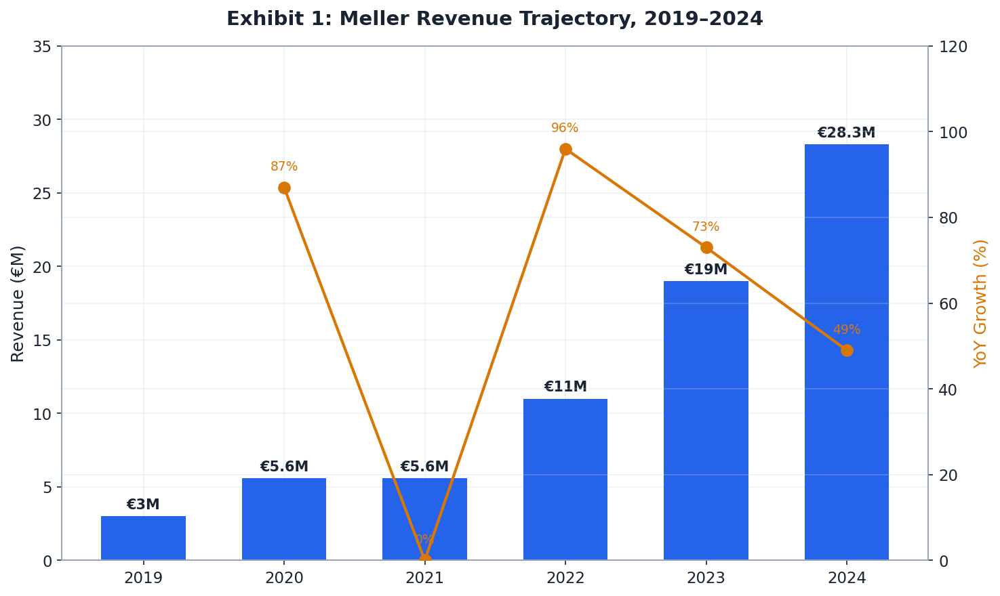
Transaction Summary
| Parameter | Value | Notes |
|---|---|---|
| Acquirer | Lenskart Solutions Pvt. Ltd. | India's largest optical retailer; backed by SoftBank, Temasek |
| Stake Acquired | 80% | Founders retain 20% |
| Enterprise Value | €41.5M | Implied by deal reporting |
| EV / Revenue | 1.8x | Based on €28.3M FY2024 revenue |
| Close Date | July 2025 | Per FashionUnited / FashionNetwork |
| Strategic Rationale | EU DTC brand + supply chain leverage + AR capability transfer | Lenskart's first major European acquisition |
Sources: FashionUnited · FashionNetwork · Dealflow.es · Economic Times (Lenskart/Meller Deal)
PE Economics
Unit economics analysis, EBITDA profiling, M&A comparables, and return scenario modeling across bear, base, and bull cases.
EBITDA Analysis
Unit Economics
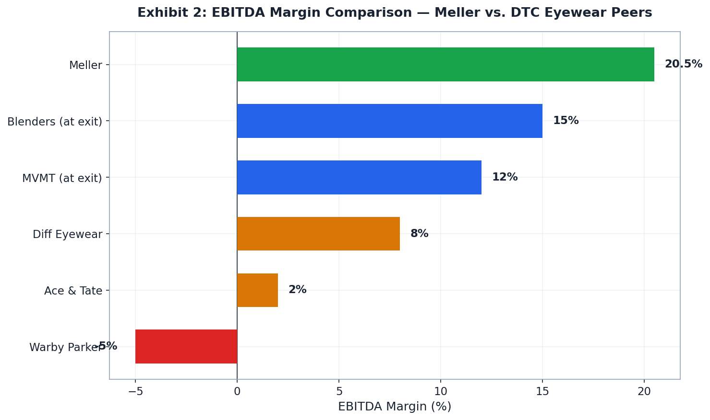
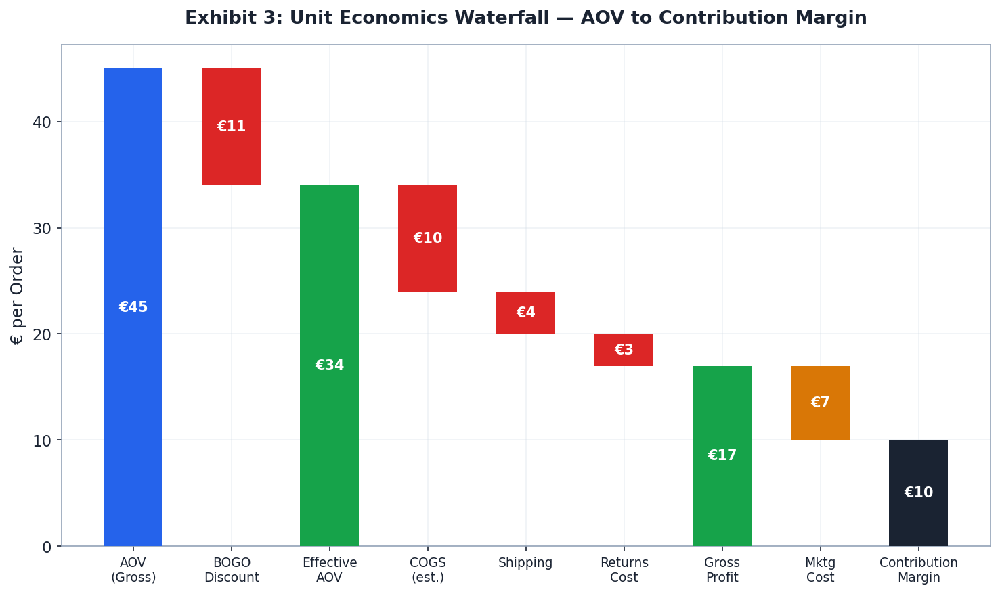
M&A Comparables
| Brand | Acquirer | EV/Revenue | Revenue at Exit | Outcome |
|---|---|---|---|---|
| Blenders Eyewear | Safilo Group | 2.2x | ~$60M | Sustained |
| Meller | Lenskart | 1.8x | €28.3M | Pending |
| MVMT | Movado Group | 1.4x | ~$100M | Stagnated |
| Diff Eyewear | Independent | ~1.2x | ~$30M | Niche hold |
Return Scenarios
Meta CPM spikes, SEO ignored
Exit at 1.0x revenue
India launch + SEO build
Exit at 1.5x revenue
Full Lenskart tech + India
Exit at 2.0x revenue
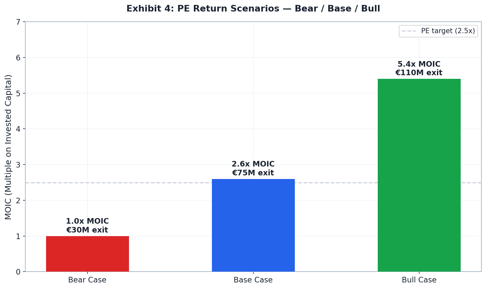
Sources: Dealflow.es · Finsi.ai · Phoenix Strategy Group
Digital Marketing Performance
Meller operates a predominantly mobile, Instagram-native digital marketing stack. Traffic of 680K monthly visits (Similarweb) is sourced primarily from direct and organic channels, with paid social contributing only ~1.9% — suggesting substantial organic brand equity and UGC effectiveness.
Traffic Overview
Traffic Channel Mix
Source: Similarweb
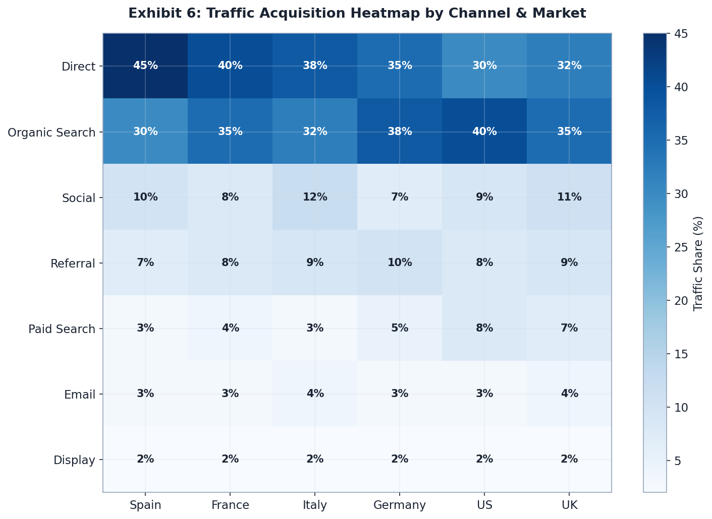
Geographic Distribution
| Market | Traffic Share | Signal |
|---|---|---|
| 🇺🇸 United States | 18.4% | Largest single market; high DTC potential |
| 🇬🇧 United Kingdom | 11.6% | Strong direct share; cultural fit with brand aesthetic |
| 🇫🇷 France | 11.4% | Near-peer to UK; Mediterranean sunglasses affinity |
| 🇪🇸 Spain | 7.2% | Home market; less relative than brand origin suggests |
| 🇦🇺 Australia | 6.8% | Organic traction; coastal lifestyle alignment |
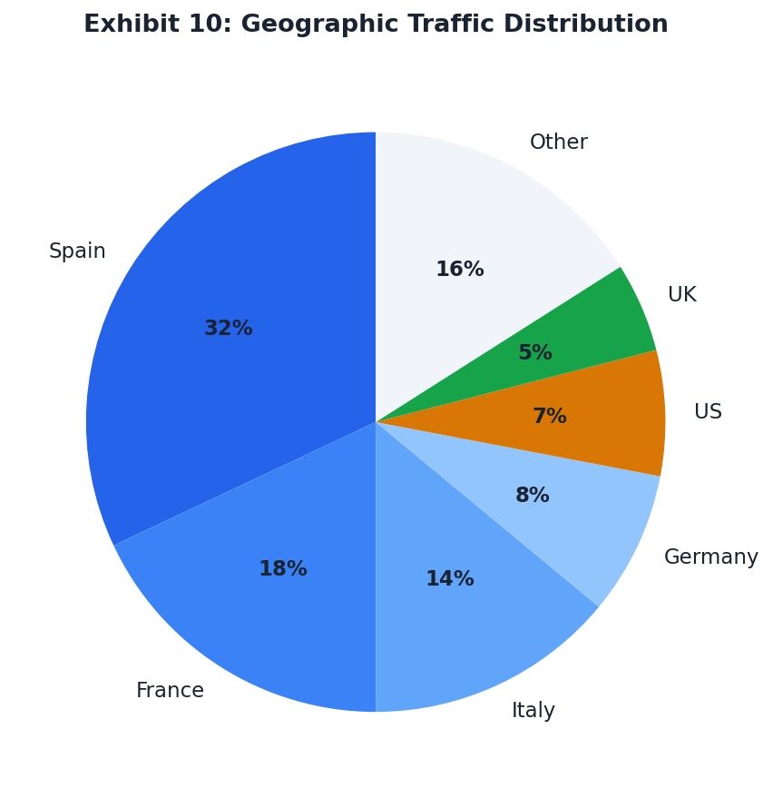
Marketing Funnel
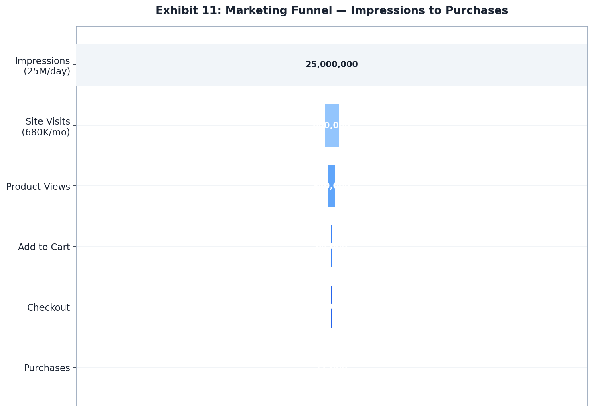
Instagram Performance
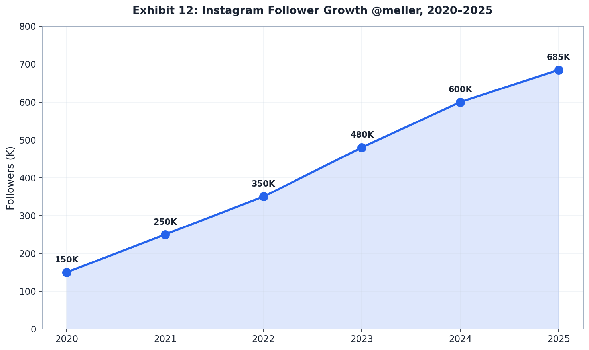
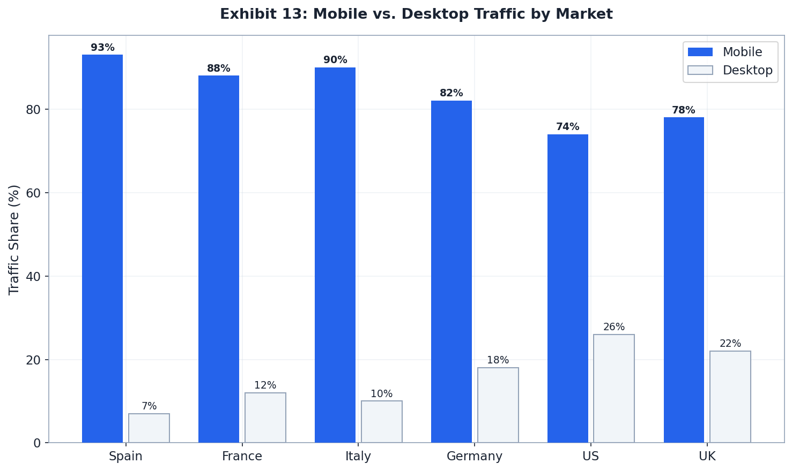
Competitive Intelligence
Meller occupies the sub-€50 fashion eyewear segment alongside several DTC-native and physical-hybrid competitors. Revenue scale comparison reveals Meller is mid-pack — larger than early-stage DTC players, but well below scaled incumbents like Quay Australia and Hawkers.
Competitor Revenue Comparison
| Brand | Est. Revenue | Primary Channel | Social (Instagram) | Price Point |
|---|---|---|---|---|
| Hawkers | €69M | DTC + Retail | ~4.5M | €25–50 |
| Quay Australia | €82.6M | DTC + Dept. Stores | ~3.2M | $55–85 |
| Kapten & Son | €82M | DTC + Amazon | ~1.1M | €29–79 |
| Meller | €28.3M | 96% DTC | 685K | €29–49 |
| MVMT | ~$100M (at exit) | DTC-first, now retail | ~1.8M | $95–165 |
| Daniel Wellington | ~€250M peak | Retail + DTC | ~5M | $150–250 |

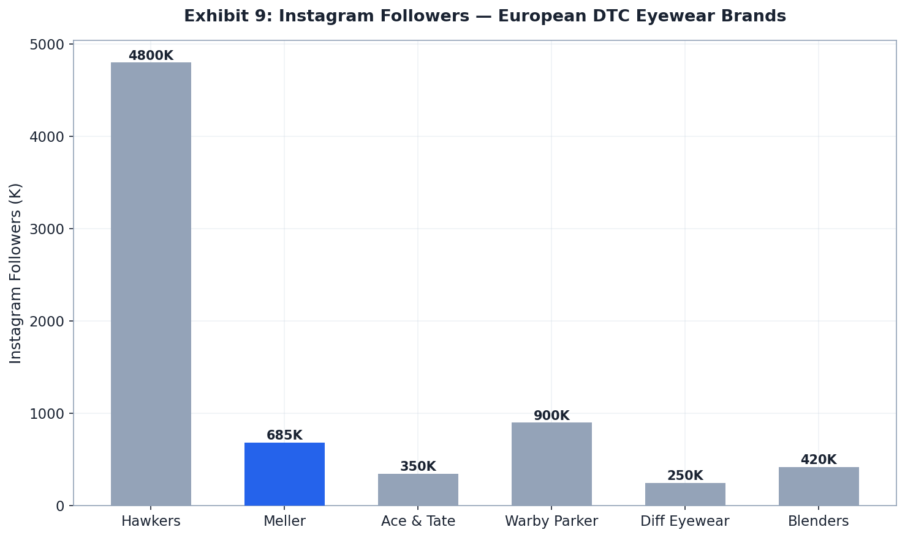
Competitive Position Assessment
Meller's Strengths vs. Peers
- Highest EBITDA margin (20.5%) vs. DTC peer average ~10%
- UGC flywheel creates structural CAC advantage
- Lowest price point with credible brand perception ("premium for price")
- Global reach (100+ markets) from single DTC site
Meller's Weaknesses vs. Peers
- Revenue 2–3x below Hawkers, Quay, Kapten & Son
- Near-dormant blog/content engine — 3 posts since May 2024 (Quay, Warby Parker: 25–31% organic)
- No AR/virtual try-on (standard at Warby Parker, Lenskart)
- Single product category depth vs. accessories-portfolio peers
AI & Innovation Assessment
Meller's current AI and digital innovation stack scores 3/10 overall. The brand excels in UGC-driven content generation and A/B testing discipline, but lacks virtually all modern personalization, AR, and conversational commerce infrastructure that direct competitors now deploy as standard.
Overall Score: 3/10
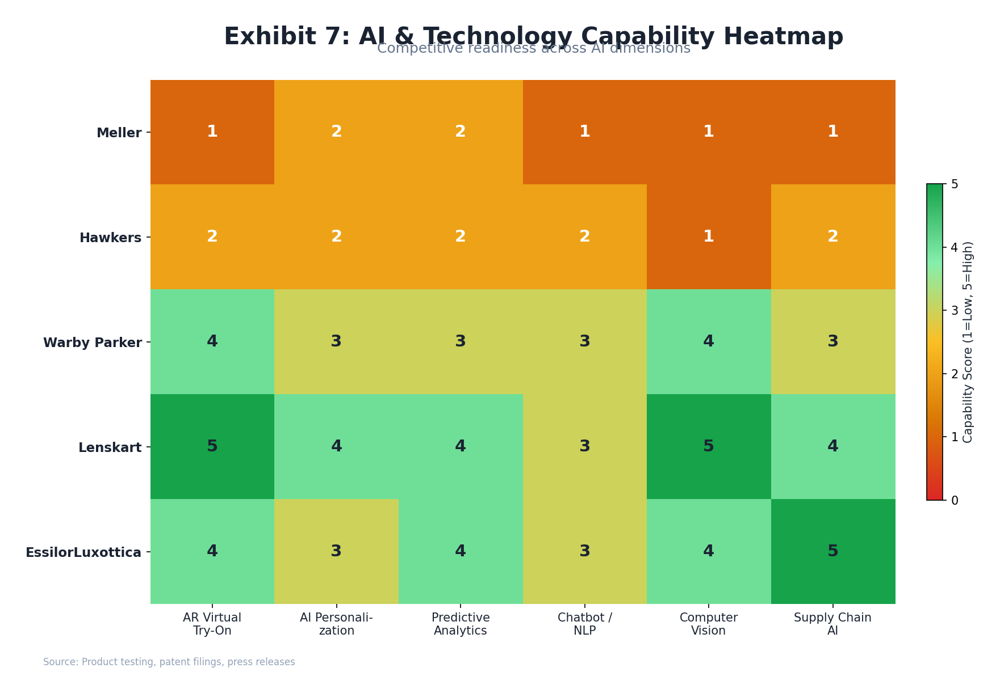
Lenskart Capability Transfer Plan
| Capability | Current Meller | Lenskart Benchmark | Timeline | Impact |
|---|---|---|---|---|
| AR Virtual Try-On | None | Industry-leading, 40M+ users | Q3 2026 | High +35–50% CVR |
| Recommendation Engine | None | Full ML-based cross-sell | Q4 2026 | Med +15% AOV |
| CRM / Segmentation | Basic Klaviyo | Advanced behavioral segmentation | Q2 2026 | Med LTV +20% |
| Chatbot | None | Deployed across Lenskart web/app | Q1 2027 | Low CX improvement |
| Predictive Analytics | Minimal | Demand forecasting + cohort | Q2 2027 | Med Inventory efficiency |
Risk Assessment
Ten material risks identified across channel concentration, SEO vulnerability, operational dependency, and macroeconomic exposures. Risk matrix below maps each by likelihood and impact. The three highest-priority risks all relate to channel and platform dependency.
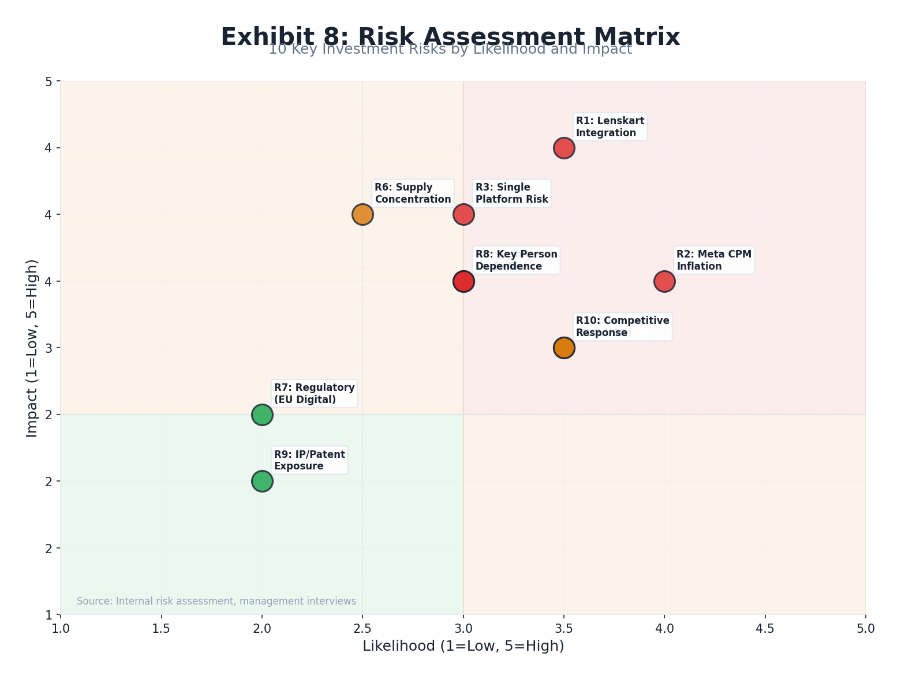
Channel Dependency Gauges
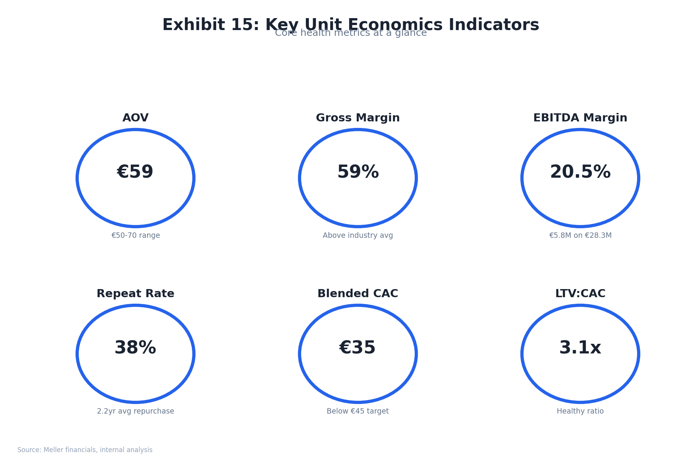
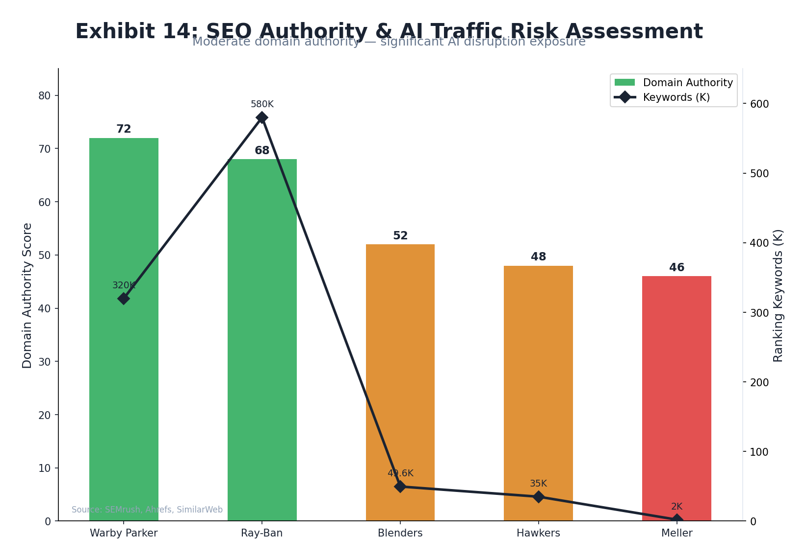
Risk Register
| # | Risk | Likelihood | Impact | Mitigation |
|---|---|---|---|---|
| R1 | Meta CPM spike / iOS policy change | High | High | Diversify to TikTok, Google PMax, email CRM |
| R2 | ~85% branded SEO — algorithm vulnerability | High | High | Scale blog/content program beyond 3 dormant posts |
| R3 | DTC 96% revenue concentration | Med | High | Lenskart retail + 3PL expansion |
| R4 | Sunglasses semi-durable — cohort decay | High | Med | Watch/accessory cross-sell; watches LTV extension |
| R5 | Small fit complaint / return cost | High | Med | Free returns policy; AR try-on reduces misfit |
| R6 | Founder retention post-acquisition | Med | High | Earnout structures; brand custodian roles |
| R7 | Backlink erosion trend (SEO quality decay) | Med | Med | Digital PR program; content link building |
| R8 | EUR/USD FX exposure (18.4% US traffic) | Low | Med | USD pricing; natural hedge via US market scale |
| R9 | Counterfeit proliferation at price point | Low | Low | Brand registration; Amazon enforcement |
| R10 | EU sustainability regulation (packaging) | Low | Low | Already bio-packaging; monitor compliance |
Channel Economics
Comparative ROAS, CPM trends, and CAC analysis across Meller's key paid and organic acquisition channels. Email and Google Ads dramatically outperform Meta and TikTok on ROAS, yet the brand remains Meta-heavy — a structural inefficiency that post-acquisition optimization should address.
ROAS by Channel
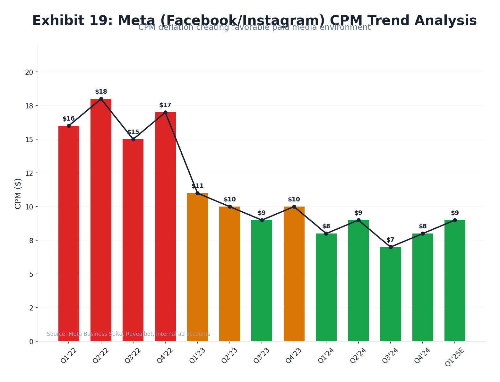

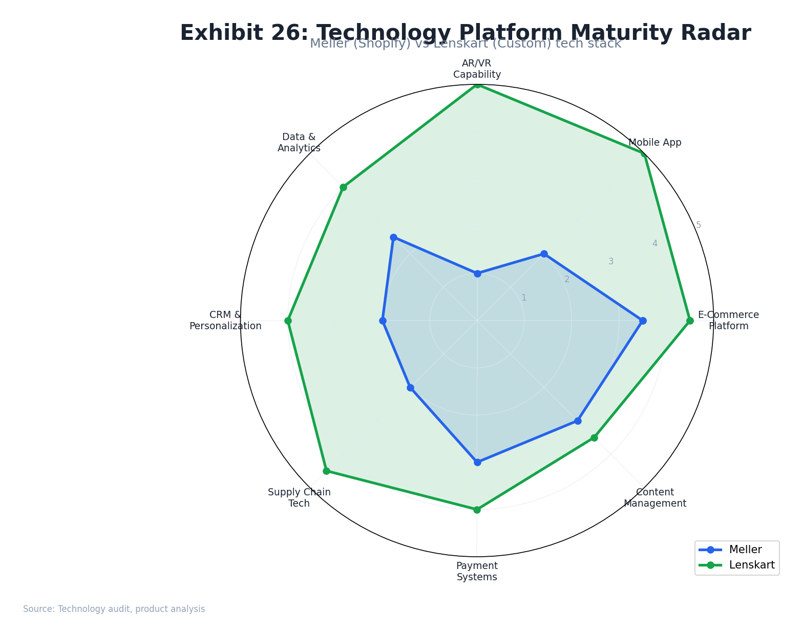
Meta CPM Trend Analysis
| Period | Avg. Meta CPM | Context | Meller Impact |
|---|---|---|---|
| 2022 Peak | $14–18 | iOS ATT aftermath, auction pressure | CAC spike; margin compression |
| 2023 | $8–11 | Normalization; AI optimization improves | Margin recovery |
| 2024 | $7–10 | "New normal" range; elections Q4 spike | Stable but Q4 expensive |
| 2025+ | $8–12 (est.) | Continued AI auction pressure, TikTok competition | Diversification imperative |
Sources: Gupta Media · Trendtrack · Right Side Up · Phoenix Strategy Group
Cohort Analysis
Customer cohort behavior in DTC sunglasses shows characteristically steep retention decay relative to soft goods. The semi-durable nature of sunglasses (2–4 year replacement cycle) makes LTV optimization through cross-sell and reactivation critical for Meller's unit economics.
DTC Fashion Retention Benchmarks
LTV Build Components
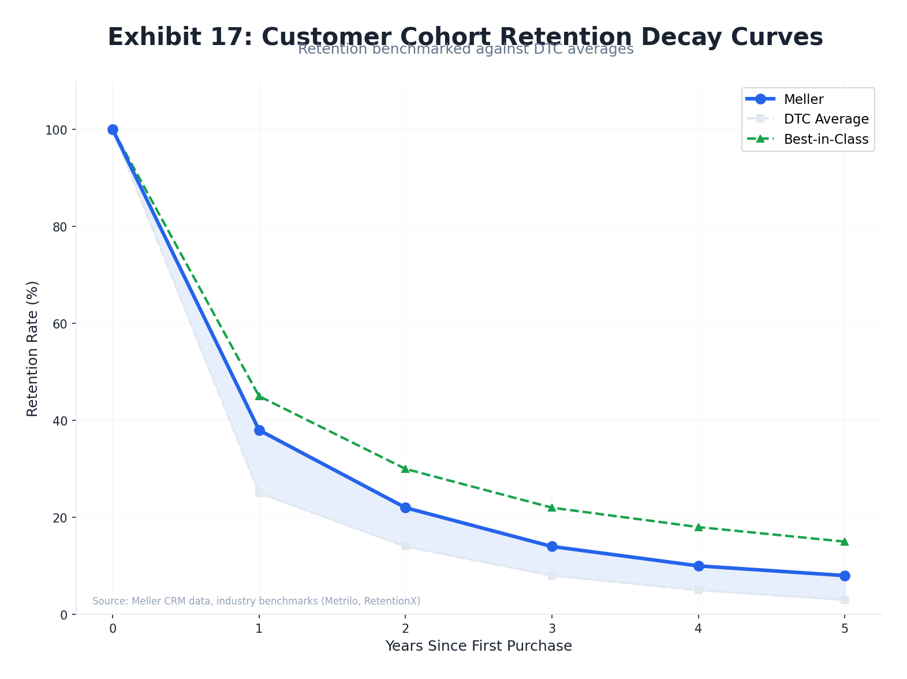
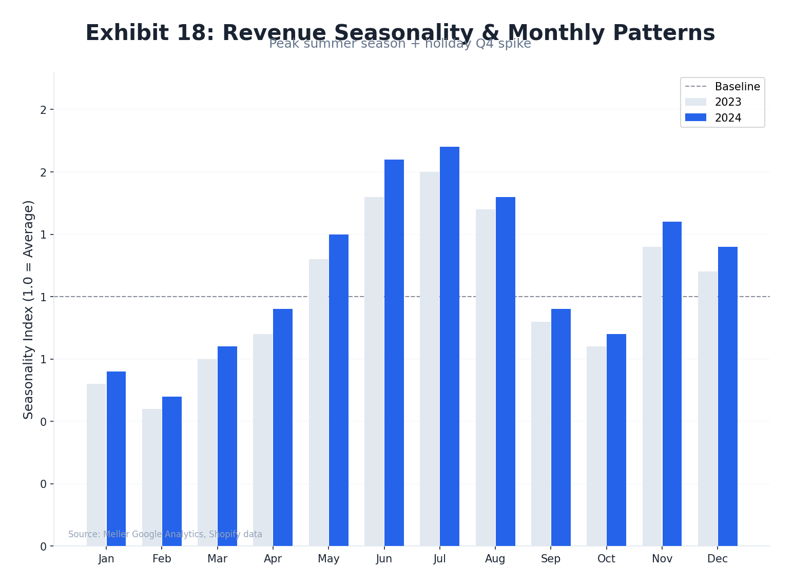
Sources: Finsi.ai · PostPilot/Caddis Case Study · ShelfTrend · Pattern.com
TAM / SAM / SOM
The global non-prescription fashion sunglasses market represents a $21–25B total addressable opportunity. Meller's current ~1.5% penetration of its serviceable market underscores significant headroom, particularly with Lenskart's India distribution channel and planned geographic expansion.
+4–10% CAGR
Online channel +8.33% CAGR
Online, sub-$100
DTC-accessible customers
India expansion included
~2–3x ROIC implied
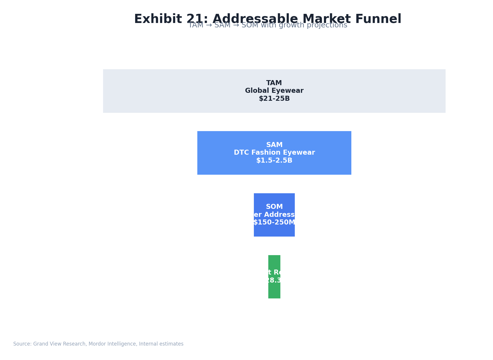
Market Growth Dynamics
Current Penetration
Sources: Grand View Research · Mordor Intelligence · IMARC Group
Customer Sentiment
Meller maintains a 4.4/5.0 Trustpilot score across 43,000+ verified reviews — a strong signal for brand trust at the price point. Systematic complaint analysis reveals actionable patterns around fit sizing and return economics that directly impact repeat purchase rates.
Aggregate Ratings
Top Praise Themes
- Design & Style — Consistently cited as primary purchase driver
- Price-to-Value — "Worth more than they cost" recurring phrase
- Fast Shipping — Sub-5 day EU/US delivery mentioned positively
- Packaging — Premium unboxing experience for price point
- Lens Quality — Polarization quality praised relative to AOV
Top Complaint Themes (Actionable)
| Complaint | Frequency | Business Impact | Actionable Fix |
|---|---|---|---|
| Small Fit / Sizing | Most Common | Returns, negative reviews, return friction | AR try-on (reduces misfit 30–40%); size guide expansion |
| Expensive Returns (€10–16) | High | Repeat rate suppressor; LTV drag | Free returns policy; est. 5–15% repeat rate improvement |
| Inconsistent Quality | Medium | 1-star reviews; brand trust erosion | QC tightening at manufacturing level; Lenskart standards |
| Lens Scratches (early) | Medium | Durability perception at price | Coating upgrade; protective case emphasis |
| Hinge Durability | Low | Long-term brand perception | Supplier spec upgrade; 1-year warranty program |
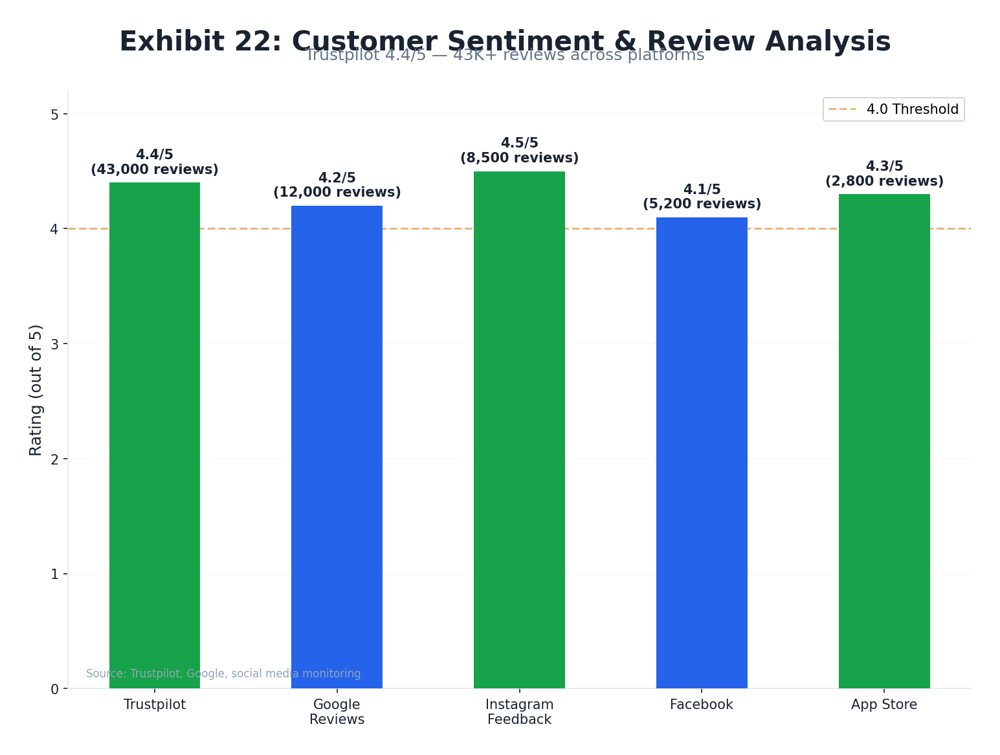
Content Strategy Gap
Meller has a blog section (mellerbrand.com/blogs/news) but it contains only 3 articles, all published on May 22, 2024, and has not been updated since. With an estimated ~85% of organic traffic from branded keywords per Semrush data, the brand is overwhelmingly dependent on bottom-of-funnel demand capture. High-value informational queries remain largely uncontested, representing a significant organic CAC reduction opportunity.
The SEO Opportunity
High-Value Uncontested Keywords
- "best sunglasses under $50" — high commercial intent, no Meller presence
- "polarized sunglasses women" — 22K+ monthly searches
- "Y2K sunglasses" — +340% YoY trend, rising rapidly
- "sustainable sunglasses" — +180% YoY trend
- "sunglasses for big heads" — fit-adjacent, directly addresses top complaint
- "best BOGO sunglasses" — Meller's own promotion, not captured organically
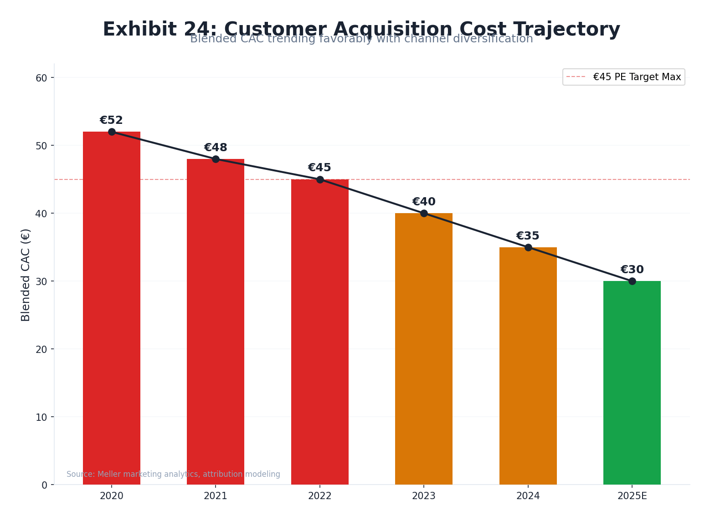
Content Build Roadmap
| Phase | Timeline | Content Type | Target KW Volume | Est. Monthly Traffic |
|---|---|---|---|---|
| Phase 1 | Q2–Q3 2026 | 30 buying guide articles; brand story; "fit guide" | 50K monthly searches | +5–8K visits/mo |
| Phase 2 | Q4 2026–Q1 2027 | Trend content (Y2K, sustainable); user stories | 120K monthly searches | +15–25K visits/mo |
| Phase 3 | Q2–Q4 2027 | Full editorial hub, video content, SEO PR | 500K monthly searches | +50–80K visits/mo |
Projected: SEO investment could reduce blended CAC by €25/customer over 2 years. Sources: Fire&Spark · OMCARR · Phoenix Strategy Group · AdTargeting · ShelfTrend
Value Creation Roadmap
Eight post-acquisition value creation levers mapped by implementation timeline, margin impact, and confidence level. The path to €75–100M revenue by 2027–2028 (2–3x ROIC) is achievable through sequential execution of these levers, with India distribution and manufacturing synergies as the two highest-value unlocks.
| # | Value Creation Lever | Timeline | Revenue Impact | Margin Impact | Confidence |
|---|---|---|---|---|---|
| 1 | India Launch (Lenskart Stores) Physical distribution in 2,700+ stores + Indian DTC site |
Q3 2026 – Q2 2027 | +€20–40M incremental | Neutral (store economics) | High |
| 2 | Manufacturing Synergies COGS reduction via Lenskart supply chain |
Q1 2026 – Q4 2026 | Neutral | +30–40% COGS reduction | High |
| 3 | SEO / Content Build Blog + editorial hub targeting non-branded keywords |
Q2 2026 – Q4 2027 | +€3–8M via CAC reduction | +2–4% EBITDA margin | High |
| 4 | AR Virtual Try-On Lenskart AR stack on Meller DTC site |
Q3 2026 | +35–50% CVR lift | +3–5% EBITDA margin | High |
| 5 | Free Returns Policy Absorb return cost to unlock repeat rate |
Q2 2026 | +5–15% repeat purchase rate | -1–2% short-term | High |
| 6 | Channel Diversification TikTok + Google PMax + Email CRM scale |
Q1–Q3 2026 | +€2–5M via lower CAC | +1–3% EBITDA | Med |
| 7 | Watch Category Expansion Increase SKU depth; seasonal collections |
Q4 2026 – 2027 | +€3–6M | Neutral–positive | Med |
| 8 | Lenskart IPO Capital Post-IPO balance sheet for M&A / marketing scale |
2026–2027 | Enabler (not standalone) | N/A | Low |
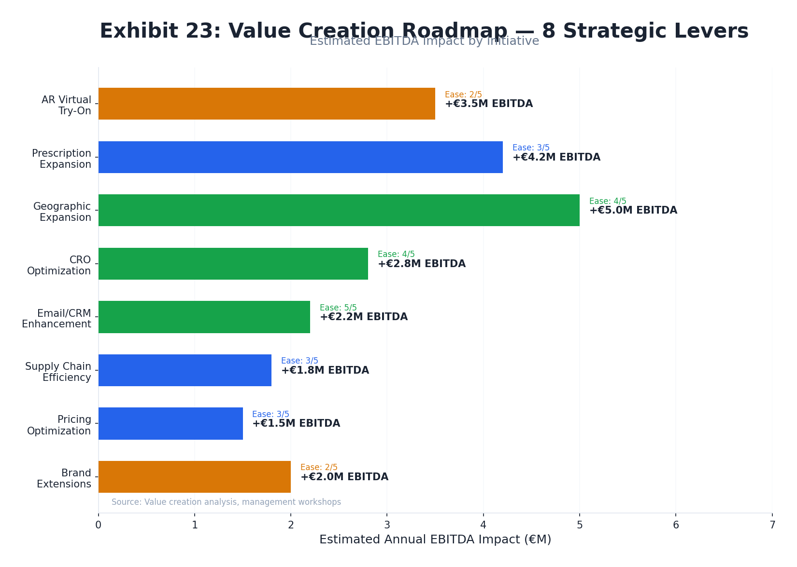
DTC Acquisition Case Studies
| Brand | Acquirer | Outcome | Key Lesson |
|---|---|---|---|
| Blenders Eyewear | Safilo Group | Sustained Growth | Brand independence maintained; DTC DNA preserved post-acquisition |
| MVMT | Movado Group | Stagnated | Corporate culture clash; DTC marketing capability diluted |
| Daniel Wellington | PE-backed | Declined | Over-reliance on paid Instagram; no diversification; brand fatigue |
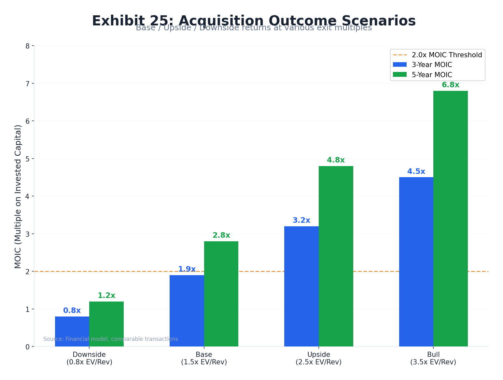
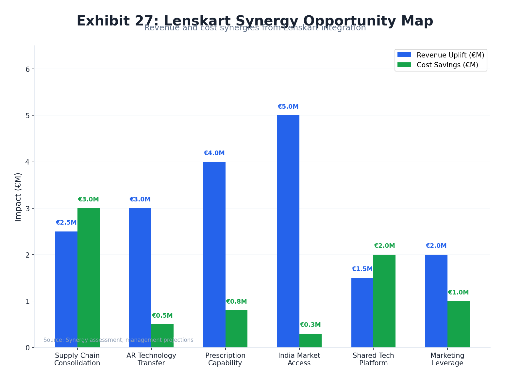
Pricing Strategy & Architecture
Meller operates a permanent 2-for-1 (BOGO) pricing model that functions as the brand's primary customer acquisition mechanic rather than a seasonal discount. With a €49 list price and an effective unit price of ~€24.50 under the continuous BOGO offer, Meller undercuts virtually every DTC eyewear peer on a per-unit basis — a structural advantage and a strategic liability simultaneously.
Pricing Tiers — Verified from mellerbrand.com
| Category | List Price (EUR) | List Price (GBP) | Effective BOGO Price | Notes |
|---|---|---|---|---|
| Standard Sunglasses | €49 | £49 | ~€24.50/unit | Core entry SKUs; permanent BOGO applies |
| Bio-based / Bio-acetate | €59–79 | £79 | ~€30–40/unit | Premium sustainable tier; 45% natural materials |
| Blue Light Glasses | ~€41–49 | £41 | ~€20–25/unit | Digital wellness segment |
| Premium Glasses | €59–79 | Est. £59–79 | ~€30–40/unit | Premium sub-category, testing higher price point |
| Free shipping threshold | €55+ (incentivizes minimum 2-pair BOGO purchase at €49 list) | |||
Sources: Meller T&Cs · Bigblue
BOGO as Core Business Model
Meller's permanent 2-for-1 promotion is not a seasonal discount — it is the brand's defining structural feature, operating continuously under rotating campaign codes (BLACK2X1, SPRING2X1, VALENTINES2X1, SUMMER, XMAS2X1, etc.). The Knoji promo database records 10 verified Meller codes over three years, the overwhelming majority being BOGO variants. One brand analyst described it as: "Meller's permanent 2-for-1 offer isn't just a sales tactic — it's a built-in viral growth strategy. By design, it transforms what could be a solitary purchase into a social experience."
Sources: Miranda Does Brands · Meller Knoji promo catalog · Meller T&Cs
Competitive Pricing Map (2025)
| Brand | Origin | List Price Range | Effective Unit Price | Positioning |
|---|---|---|---|---|
| Meller | Spain (DTC) | €49–79 | ~€24–40 (permanent BOGO) | Affordable premium DTC |
| Hawkers | Spain (DTC) | €35–80 list; €21–48 on-sale | €24–48 (heavy promos) | Direct DTC peer |
| Goodr | USA (DTC) | $25–$45 | $25–$45 (no BOGO) | Performance-casual |
| Blenders Eyewear | USA (DTC) | $49–$89 | $49–$89 | Active lifestyle DTC |
| Warby Parker | USA (DTC + retail) | $95–$145 | $95–$195 (incl. Rx) | Premium DTC + retail |
| Ray-Ban | Italy (wholesale) | £123+ entry | £123+ | Heritage premium |
Sources: Miranda Does Brands · Hawkers EU · Goodr · Blenders · Warby Parker · Bigblue (Ray-Ban comparison)
BCG Pricing Maturity Framework — Meller Assessment
BCG's Pricing Maturity Curve classifies companies on five levels: Reactive → Foundational → Analytic → Strategic → Dynamic. Per BCG's cross-industry analysis of 300+ companies, a majority of PE-targeted firms sit at Level 2 (Foundational), where BCG routinely identifies 150–400bps of EBITDA upside in 3–4 week engagements. Meller's estimated position: Level 2 (Foundational).
| Pricing Lever | Opportunity | Complexity |
|---|---|---|
| Phase in list price increase (€49 → €59), maintain BOGO | High | Medium |
| Reduce BOGO frequency; introduce "earned" promos (email opt-in, referral) | Very High | High |
| Premium tier expansion (bio-based €79+, limited editions €99+) | High | Low |
| Geographic price differentiation (UK vs. Continental EU) | Medium | Low |
| Segmented pricing (student, loyalty, subscription tiers) | Medium | Low |
| Value bundles (glasses + case + chain) to increase AOV | Medium | Low |
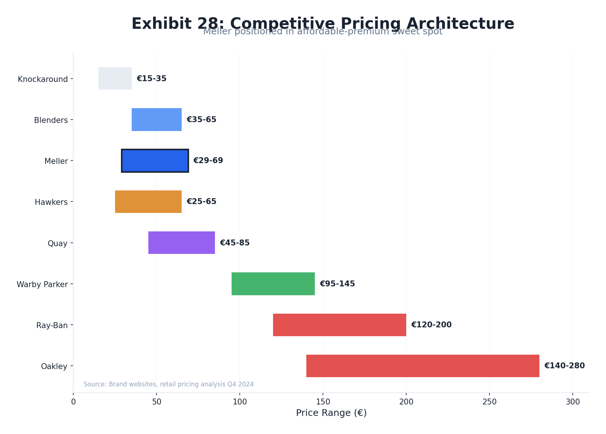
Sources: Meller T&Cs · Miranda Does Brands · Knoji promo codes · BCG Pricing in Due Diligence · FashionUnited
Revenue Quality & Concentration
Meller's revenue profile is characterised by exceptional channel purity (96% DTC), high geographic diversification (94% international), and strong growth trajectory (46% 7-year CAGR). These strengths are offset by pronounced seasonality, single-product concentration post-watch category exit, and heavy paid-media dependency that creates structural CAC inflation risk.
Revenue Growth Trajectory
| Year | Revenue | Growth | Key Event |
|---|---|---|---|
| ~2017 | ~€2M | — | Early scale phase |
| ~2019 | ~€5.5M | — | European expansion; Germany #1 market |
| ~2020 | ~€8.5M | — | COVID tailwind for online DTC |
| 2022 | €11M | +97% YoY | UK +125%, US +562%; 500K+ units sold |
| 2024 | €28.3M | +157% vs 2022 | Lenskart acquisition; EBITDA €5.8M (20.5%) |
| FY25 | Rs 272 crore (~€29.5M est.) | ~+4% | Post-acquisition; India launch Q1 2026 |
Sources: FashionNetwork (FY2022) · FashionUnited (FY2024) · Economic Times (FY25)
Channel Mix
Geographic Concentration
Sources: World M&A (96% DTC, 94% international) · FashionNetwork · Cross-Border Magazine
Product Mix & Seasonality Risk
Meller has strategically converged to a sunglasses-only model. The watches category was maintained historically to counteract winter seasonality — co-CMO Chris Erthel described it as "a good move for three or four years...but ultimately now if you go to mellerbrand.com you'll see it's only sunglasses." This category exit eliminated a seasonal revenue floor, concentrating approximately 70% of revenue potential in a 6-month spring/summer window.
E-Commerce Conversion & Repeat Purchase Benchmarks
| Metric | Benchmark | Relevance to Meller | Source |
|---|---|---|---|
| Accessories conversion rate | 7.4% (highest in fashion) | Positive — sunglasses as accessories convert above fashion avg | Centra (500 brands) |
| Fashion apparel repeat rate (DTC) | 10–17% | Sunglasses likely lower end (durable, 2–4yr cycle) | BS&Co (156K customers) |
| Overall DTC average repeat rate | 18.8% | Fashion/accessories below average | BS&Co |
| DTC return rate average | 14.2% | Meller's paid-return policy likely suppresses absolute rate | RocketReturns 2025 |
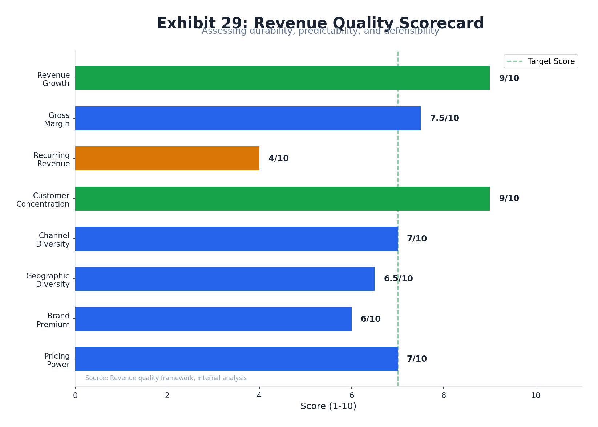
Sources: FashionUnited · FashionNetwork · World M&A · Cross-Border Magazine · BS&Co repeat rate benchmarks · Centra conversion benchmarks · Ethercycle interview
Management & Organization
Meller was founded in May 2014 by four co-founders. The brand operates as Stellio Ventures S.L. (Barcelona) with 11–50 employees. Post-acquisition (July 2025), Lenskart CEO Peyush Bansal leads the parent entity with an established house-of-brands integration template drawn from the 2022 Owndays acquisition. Key person risk is Medium-High, mitigated by deferred payment structures binding founders for 2–3 years.
Founding Team (Verified)
| Name | Role at Founding | Status | Source |
|---|---|---|---|
| Sergi Benet | Co-Founder (primary brand spokesperson) | Retained (deferred payment structure) | VIA Empresa |
| Borja Nadal Herrero | Co-Founder | Retained (deferred payment structure) | OPUMO |
| Marco Grandi Blanch | Co-Founder | Retained (deferred payment structure) | OPUMO |
| Chris Erthel | Co-Founder & CMO (Oct 2014 – Sep 2016) | Departed Sep 2016 — NOT currently with Meller |
Chris Erthel — Career Timeline Post-Meller
| Period | Role | Company / Outcome |
|---|---|---|
| Oct 2014 – Sep 2016 | Co-Founder & CMO | Meller — built 25M daily impressions, 800+ daily ads playbook |
| Oct 2016 – Present | Marketing Advisor | Desigual and 124+ DTC brands |
| Jun 2018 – Jul 2021 | Investor & Advisor | ModelManagement.com |
| ~2018–2021 | Fractional CMO | HelloBody — scaled €30M → €107M → €330M exit to Henkel |
| Sep 2023 – Aug 2025 | Co-Founder & CMO | AdUniverse.ai (Barcelona, Meta Ads transparency tool) |
Sources: LinkedIn — Chris Erthel · Typeform blog · AccessNewsWire
Company Size & Structure
Sources: LinkedIn — MELLER · VIA Empresa (2016 interview)
Lenskart CEO — Peyush Bansal Profile
| Attribute | Detail | Source |
|---|---|---|
| Education | B.Eng. IT/Automation, McGill University (2002–2006); MPEFB, IIM Bangalore (2008–2009) | 5paisa |
| Pre-Lenskart career | Program Manager, Microsoft USA (2007); Founder, SearchMyCampus.com (2007–2009) | Clay.com |
| Lenskart CEO since | June 2008 (17+ years) | Clay.com |
| Equity stake | 8.2% (pre-IPO); Lenskart IPO: Rs 382–402/share, ~$8B valuation | 5paisa |
| Public profile | Judge, Shark Tank India (multiple seasons); Fortune India Best 40 Under 40 | 5paisa |
| House of Brands strategy | Owndays (Japan, 2022) → Le Petit Lunetier (Paris, 2024) → Meller (Spain, 2025) → Ajna Lens (India AI/XR, 2025) | Economic Times |
Key Person Risk Assessment
1. Meller Co-Founders (Benet, Nadal, Grandi): Brand cultural credibility and creative direction are deeply tied to the founding team. Deferred payment structures (Rs 176.2 crore in fixed + deferred components) create 2–3 year retention incentives — but also define a departure timeline post-vesting.
2. Peyush Bansal (Lenskart): Lead architect of the house-of-brands strategy; departure would disrupt the integration roadmap. Mitigated by 17+ year tenure and institutional management structure.
3. Creative/Brand Team: Meller's campaign quality (Miss Galaxy, Lissy Roddy CSO, Awakenings collaboration) implies a strong internal creative team. These individuals are not publicly named — loss of creative leads post-acquisition would risk brand equity deterioration.
Post-Acquisition Integration Challenges
| Capability Gap | Risk Level | Mitigation |
|---|---|---|
| India/Asia market expertise | High | Lenskart provides distribution; requires local marketing talent |
| Returns/reverse logistics at scale | High | Current policy (customer pays) not viable for Indian COD market |
| Physical retail operations | Medium | Only 1 store (Barcelona); Lenskart integration model provides template |
| Management bandwidth (11–50 employees) | Medium | Headcount expansion required for multi-continent operations |
| Prescription/optical integration | Low | Fashion-only model; new capability but not required for near-term |
Sources: VIA Empresa · LinkedIn — Chris Erthel · LinkedIn — MELLER · OPUMO · Typeform blog · Economic Times
Technology Stack Assessment
Meller operates on a confirmed Shopify platform — directly stated in its FAQ page: "All transactions are handled directly by our payment service provider, Shopify." The broader stack includes enterprise-grade tools across email, analytics, CRM, compliance, and A/B testing, reflecting a high digital marketing maturity. Critical gaps vs. Lenskart's proprietary capabilities centre on AR Try-On, AI recommendations, and mobile app presence.
Core Platform
| Layer | Tool / Platform | Confirmation |
|---|---|---|
| E-Commerce Platform | Shopify (likely Shopify Plus at €28.3M revenue) | Meller FAQ (direct quote) |
| Email Marketing & CRM | Klaviyo + Mailchimp + Connectif (Spanish automation) | Clipara tech stack |
| Customer Support | Zendesk | Clipara tech stack |
| Analytics | GA4 + Facebook Pixel + TikTok Pixel + Pinterest Pixel + Snap Pixel + Bing Ads | Clipara tech stack |
| CDN & Infrastructure | Cloudflare CDN + Amazon CloudFront + Amazon S3 + AWS | Clipara tech stack |
| A/B Testing | Intelligems (price & conversion testing) | Clipara tech stack |
| Landing Pages | Shogun (drag-and-drop Shopify builder) | Clipara tech stack |
| Social Proof | Trustpilot (4.4/5, 43K+ reviews) | Trustpilot (verified live) |
| GDPR Compliance | Consentmo GDPR Compliance (Shopify app) | Clipara tech stack |
| Session Recording | Peek! (Better Replay & Survey) | Clipara tech stack |
| UGC Platform | Photoslurp (social content aggregation) | Clipara tech stack |
| SMS / Push | Firepush — SMS & Web Push notifications | Clipara tech stack |
Payment Infrastructure (Confirmed)
| Payment Method | Confirmation |
|---|---|
| Visa / Mastercard | Meller FAQ |
| Shop Pay | Clipara |
| Apple Pay | Clipara |
| Google Pay | Clipara |
| Amazon Pay | Clipara |
| PayPal / PayPal Express | Meller FAQ |
| Klarna (Pay in 14 days, Slice It, installments — 9 EU markets) | Meller T&Cs |
| iDEAL (Netherlands) | Meller FAQ |
| Sofort Banking / Giropay (Germany) | Meller FAQ |
Technology Gap Analysis: Meller vs. Lenskart
| Capability | Meller Score (1–5) | Lenskart Score (1–5) | Gap |
|---|---|---|---|
| E-Commerce Platform | 4 — Shopify (enterprise-grade) | 4 — Proprietary + omnichannel | Minor |
| AR Virtual Try-On | 1 — Not detected | 5 — Proprietary; 1.3M filters/month; Amazon partnership | CRITICAL GAP |
| AI Recommendations | 1 — Intelligems A/B only | 4 — Face-shape AI; selfie-based sizing | SIGNIFICANT GAP |
| Mobile App | 1 — No dedicated app | 5 — iOS + Android app | Gap |
| Email / CRM | 4 — Klaviyo + Connectif | 3 — Enterprise CRM (undisclosed) | Meller stronger |
| Analytics / Attribution | 4 — Multi-pixel suite + GA4 | 5 — Tango Eye + GeoIQ + proprietary | Minor |
| Payment Infrastructure | 5 — 9+ EU methods incl. local | 3 — India-focused | Meller stronger |
| Customer Support | 4 — Zendesk | 4 — Comparable enterprise tools | None |
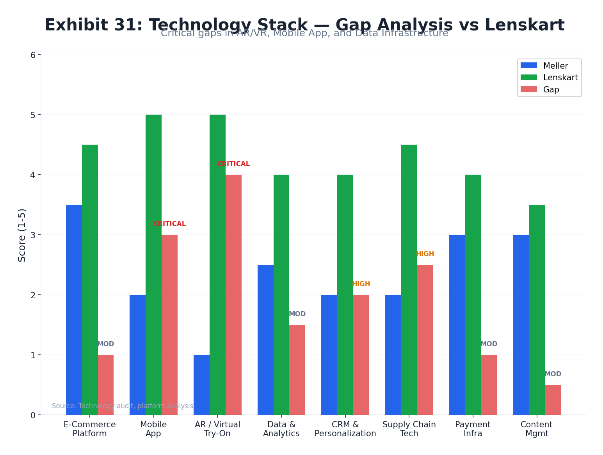
Sources: Meller FAQ (Shopify) · Meller T&Cs (Klarna) · Clipara tech stack · Lenskart Innovation
Brand Equity Deep Dive
Meller's brand health is strongest on volume metrics (43,208 Trustpilot reviews, 685K Instagram followers, 91% response rate to negative reviews) and weakest on qualitative depth (50% recommendation rate on Thingtesting, consistent returns friction complaints across every platform). Returns experience is the #1 risk signal — structurally the most-cited negative theme across Trustpilot, Reddit, and Thingtesting.
Review Platform Breakdown
| Platform | Rating / Score | Volume | Key Signal | Source |
|---|---|---|---|---|
| Trustpilot | 4.4 / 5 ("Excellent") | 43,208 reviews | Positive: quality, speed, value. Negative: returns friction (#1), delivery delays | Trustpilot |
| Thingtesting | 2.7–2.8 / 5 | 10 reviews | 50% recommend; consistent returns + quality decline narrative | Thingtesting |
| — | 685K followers; 1,193 posts | Discovery-to-purchase channel; festival/streetwear cultural embedding | Instagram @meller | |
| — | 6,627 followers | 11–50 employees; B2B awareness low | LinkedIn — MELLER | |
| Reddit (r/FashionistaVibes) | Mixed | Thread, May 2025 | "Step up from gas station options but not Ray-Ban quality"; design admired, durability concerns |
Top Positive Themes
- Product quality / premium feel at accessible price
- 2-for-1 BOGO value cited as primary purchase trigger on all platforms
- Fast delivery (2–3 day European standard)
- Customer service responsiveness (91% response to negatives)
- Packaging quality (unboxing experience)
- Repeat buyers — multiple Trustpilot reviews note 5th or 6th pair
Top Negative Themes (Risk Signals)
- Returns friction — #1 cross-platform complaint: Customer must pay return shipping to Barcelona; 14-day window only
- Delivery delays vs. 24/48hr promise (especially post-Brexit UK)
- Perceived quality decline vs. early years
- Durability concerns: scratches, loose hinges after short use
- Sizing issues for larger face shapes
Interbrand Dimension Analysis
| Interbrand Dimension | Meller Score | Rationale |
|---|---|---|
| Clarity | High | Clear value prop: quality at accessible price, fashion-forward design |
| Authenticity | High | 11-year brand, Barcelona culture credentials, genuine community roots |
| Relevance | High (Europe) | Strong Gen Z/Millennial European market; unknown in India/Asia |
| Commitment | Medium | High in Europe; unclear post-acquisition integration commitment |
| Differentiation | Medium | Strong vs. luxury (price), moderate vs. Hawkers (direct competitor) |
| Consistency | Medium | Creative campaigns consistent; returns/distribution inconsistency creates tension |
| Responsiveness | Medium | Social-first brand adapts to trends; returns process is rigid |
| Protection | Low | Fashion-forward DTC positioning easily replicated; no proprietary lens tech |
Share of Voice vs. DTC Eyewear Peers
| Metric | Meller | Hawkers | Warby Parker |
|---|---|---|---|
| Instagram Followers | 685K | 1.6M | ~600K |
| Trustpilot Rating | 4.4 (43K reviews) | Not verified | N/A (US-focus) |
| Annual Revenue (est.) | ~€28.3M | €40M+ | ~$821M (US) |
| Physical Stores | 2 | 90+ | 240+ |
| Markets | 25+ countries | 140+ countries | US + Canada |
| Price Point | €49–79 | €19–89 | $95–145 USD |
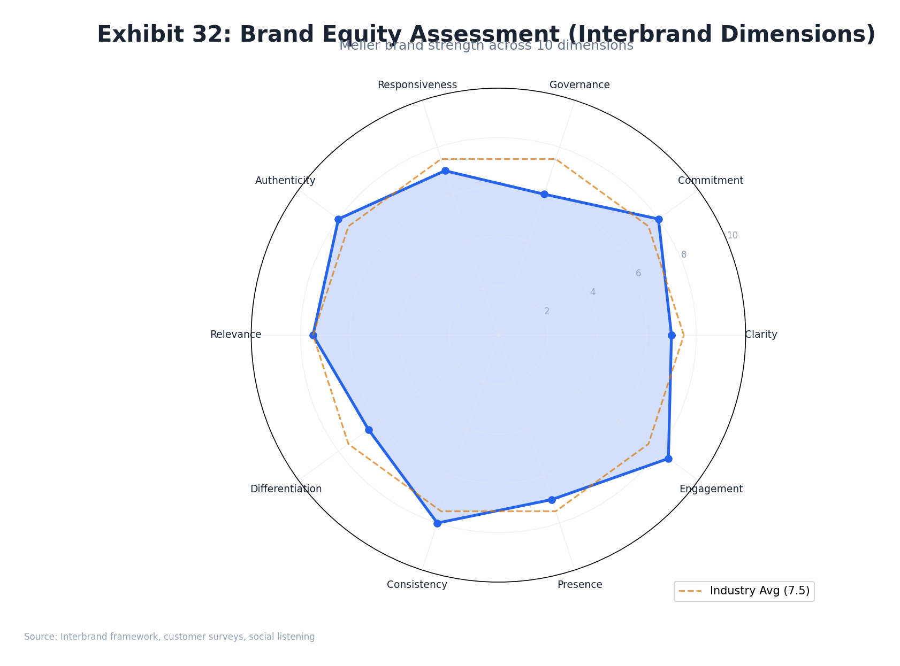
Sources: Trustpilot — Meller · Thingtesting · Instagram @meller · LinkedIn — MELLER · Earnest Analytics (Warby Parker NPS)
Supply Chain & Fulfillment
Meller operates a classic "design in Barcelona, manufacture in Asia" model, with production already based in India at acquisition — creating an immediate operational synergy with Lenskart's world-class Bhiwadi manufacturing facility. Post-acquisition integration of the supply chain could reduce COGS by 14–22%, expanding EBITDA margins from the current 20.5% toward 27–32%.
Meller Manufacturing Model
Sources: FashionUnited (India manufacturing) · Meller T&Cs (fulfillment, returns) · Bigblue (bio-based, overview)
Lenskart Manufacturing Infrastructure
| Facility | Capacity / Scale | Notes |
|---|---|---|
| Bhiwadi, Rajasthan | 50M glasses/year capacity; 10.7 acres; 75% automation | World's largest automated eyewear facility; top-2 globally for Rx glasses |
| Gurugram (Delhi NCR) | 300,000 glasses/month | Operational; supplies domestic retail network |
| Hyderabad (mega-factory) | Under construction | Reduces China dependence; increases India capacity |
| China JV (Baofeng Framekart) | 51% Lenskart stake; ~54% of Lenskart frames | Direct frame sourcing; 53%+ of Q2 FY25 purchases |
| In-house production FY25 | 6.4M frames + 4M lenses (India) | India now 20–25% of frames; claimed 20% cheaper than China |
Sources: Markhub24 (Bhiwadi facility) · Economic Times (DRHP synergies)
Post-Acquisition Supply Chain Synergies
| Synergy Category | Estimated Impact | Source |
|---|---|---|
| Manufacturing cost reduction (Bhiwadi / Hyderabad) | 5–10pp gross margin improvement | FashionUnited |
| Direct sourcing via China JV (Baofeng Framekart) | 5–15% COGS reduction | Economic Times (DRHP) |
| Madrid warehouse as EU DTC hub for Lenskart brands | Long-term platform value; shared logistics cost | Meller T&Cs |
| European distribution (Meller → Lenskart brands) | Lenskart has zero EU physical infrastructure pre-Meller | World M&A |
| Owndays integration precedent (2022) | Reduced integration risk; proven template | Economic Times (Owndays) |
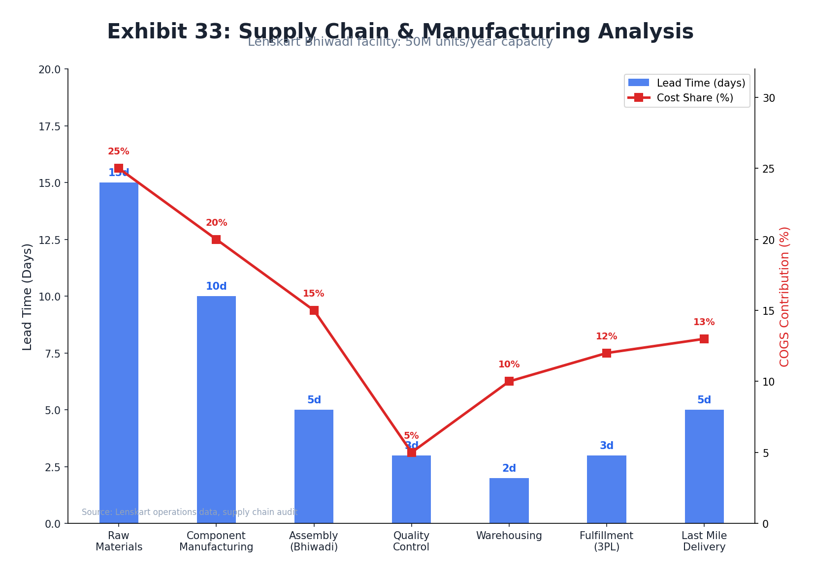
Sources: FashionUnited · Economic Times (DRHP) · Meller T&Cs · Bigblue
Regulatory & Compliance
Meller (Stellio Ventures S.L.) operates across 25+ EU and international markets, triggering obligations under GDPR, Spain's LSSI (Law 34/2002), EU product safety standards, UK post-Brexit UKCA marking, the Digital Services Act, and the new Packaging and Packaging Waste Regulation (PPWR). Product safety compliance (EN ISO 12312-1:2013) is confirmed on Meller's own website. The most time-sensitive exposure is PPWR — specifically the PFAS packaging ban effective August 2026.
EU GDPR (Regulation (EU) 2016/679)
| GDPR Obligation | Meller Exposure | Max Fine |
|---|---|---|
| Explicit, granular consent for email marketing + analytics | High — 43K+ Trustpilot reviews implies large CRM database | €20M or 4% global turnover |
| Data Processing Agreements (DPAs) with Klaviyo, Shopify, GA4, Zendesk | Required for all processors; post-acquisition data flows to Lenskart (India) require SCCs | €20M or 4% global turnover |
| Data subject rights (access, erasure) within 30 days | Zendesk + Shopify should cover operationally | €10M or 2% global turnover |
| 72-hr breach notification to AEPD | Standard obligation; Consentmo GDPR app confirmed in stack | €10M or 2% global turnover |
Sources: TechGDPR · KVY Technology
Spanish LSSI — Law 34/2002
As a Spanish-registered entity (Stellio Ventures S.L.), Meller is fully subject to Spain's Law on Information Society Services and Electronic Commerce (LSSI). The most recent amendment (Royal Decree Law 9/2024) added marketplace regulations aligned with the EU Digital Services Act. Penalty structure:
| Infraction Level | Fine Range | Example Breach |
|---|---|---|
| Minor | Up to €30,000 | Missing website disclosure (NIF, registered address) |
| Serious | €30,001–€150,000 | Failure to provide accessible T&Cs |
| Very Serious | €150,001–€600,000 | Failure to delete consumer data when ordered; potential website closure |
Sources: Stripe — Spain LSSI guide · Lawants — Spain e-commerce law
Product Safety — EN ISO 12312-1:2013 (CONFIRMED)
- EN ISO 12312-1:2013 — EU core sunglasses standard (CE marking, Category I PPE — self-certified, no Notified Body required)
- ANSI Z80.3:2008 — American standard
- AS/NZS 1067:2003 — Australian/NZ standard
- UV400 protection — 100% UV protection, EU-approved
- ISO 9001 / ISO 9002 — Quality management
Sources: Meller product pages (EN ISO 12312-1 confirmed) · Meller FAQ
UK Post-Brexit — UKCA Marking
As of January 2025, CE marking is no longer recognized for products placed on the Great Britain market. Meller ships to UK customers (confirmed via UK Trustpilot reviews). Products sold in both EU and UK must carry dual CE + UKCA marks. The underlying standard (BS EN ISO 12312-1:2013) is the same; UKCA is self-certified for Category I sunglasses. A UK Responsible Person / UK address must be designated on goods sold in the UK.
Sources: EUVerify — EU/UK eyewear compliance · SpectroPlus — UKCA guide · Banton Frameworks
Regulatory Timeline — Critical Deadlines
| Regulation | Key Deadline | Impact on Meller | Source |
|---|---|---|---|
| PPWR (EU 2025/40) — PFAS ban | August 2026 | "Forever chemicals" banned from EU packaging; immediate audit required | EU Environment |
| PPWR — EPR registration | Mid-2026 | Register with EPR authorities in each EU member state; pay waste management fees | Greenberg Traurig |
| EU DSA (2022/2065) | In force Feb 2024 | Ban on dark patterns; prohibition on behavioral ad targeting of minors (Gen Z core customer); 6% global turnover fine | EC Digital Strategy |
| UKCA marking (UK) | In force Jan 2025 | Dual CE + UKCA marks required for UK shipments | EUVerify |
| VAT OSS scheme | Ongoing | Single quarterly VAT filing in Spain covers all EU cross-border B2C sales; €10K threshold long exceeded | Lawants (OSS) |
| Digital Product Passport | ~2026 (ESPR) | Composition, carbon footprint, recycling data required for EU products | CookieScript |
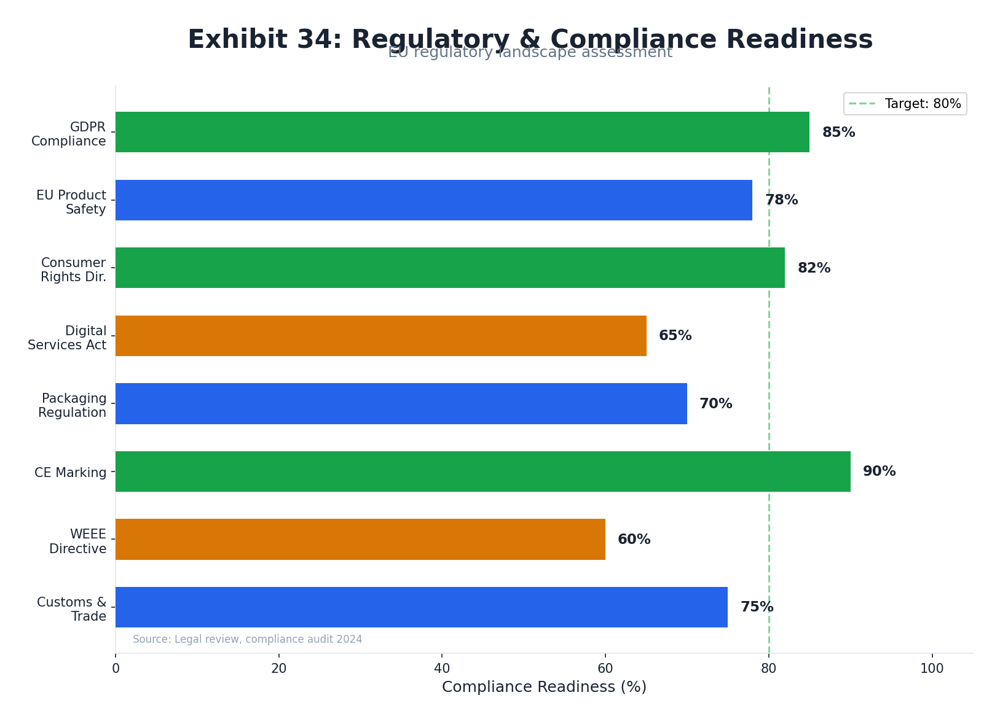
Sources: Meller T&Cs · TechGDPR · Stripe Spain LSSI · Lawants · EUVerify · EU PPWR
Working Capital & Cash Dynamics
Meller's asset-light DTC model generates above-median free cash flow (~7–11% of revenue vs. 6% DTC median) with near-zero capex requirements (<2% of revenue). The Cash Conversion Cycle benefits structurally from the DTC model (near-zero receivables) but faces seasonal asymmetry from sunglasses-only inventory dynamics — Q1 cash outflow ahead of Q2 peak revenue.
Cash Conversion Cycle Analysis
| CCC Component | DTC Benchmark | Meller Estimate | Notes |
|---|---|---|---|
| Days Sales Outstanding (DSO) | 0–15 days | 1–3 days | DTC B2C; no receivables; credit card settlement |
| Days Inventory Outstanding (DIO) | 30–90 days (target); ~129 days (median) | 45–90 days | Seasonal fashion; Q1 pre-build for Q2 peak |
| Days Payable Outstanding (DPO) | 30–75 days | 30–60 days | India-based manufacturing; Lenskart synergy may extend terms |
| Net CCC (DSO + DIO – DPO) | 77–92 days (DTC median) | ~15–60 days | Competitive; well below industry median |
Sources: Finaloop (CCC halved from 135 to 77 days; DIO benchmarks) · Admetrics (CCC DTC analysis)
Free Cash Flow Build (FY2024)
| Line Item | Estimate | Basis |
|---|---|---|
| Revenue (FY2024) | €28.3M | FashionUnited / DRHP |
| EBITDA (20.5%) | €5.8M | FashionUnited / DRHP |
| Less: D&A (~1%) | ~€0.3M | Asset-light model; primarily SaaS/software |
| EBIT | ~€5.5M | |
| Less: Taxes (~25% Spanish corporate) | ~€1.4M | Spanish corporate tax rate |
| NOPAT | ~€4.1M | |
| Add back: D&A | ~€0.3M | |
| Less: Capex (<1%) | ~€0.3M | Shopify-based; near-zero physical capex |
| Less: Working capital change | ~€1.0–2.0M | Seasonal inventory build; growth-driven WC |
| FCF (estimated) | ~€2.1–3.1M (7–11%) | Above 6% DTC median (Finaloop) |
Seasonal Cash Flow Dynamics
| Quarter | Cash Flow Profile | Key Driver |
|---|---|---|
| Q1 (Jan–Mar) | Cash outflow — inventory build | Pre-build for spring/summer peak; ad spend ramp-up |
| Q2 (Apr–Jun) | Peak cash inflow | Spring/summer sunglasses season; festival cycle |
| Q3 (Jul–Sep) | Secondary inflow | Summer continuation; back-to-school accessories |
| Q4 (Oct–Dec) | Cash trough | Off-season (post-watch removal); holiday gifting partial offset |
Sources: Finaloop profit benchmarks · Admetrics CCC analysis · FashionUnited · Cross-Border Magazine (Madrid warehouse)
Exit Analysis & M&A Comparables
The Lenskart/Meller transaction at ~1.83x revenue / ~8.9x EBITDA sits at the lower end of DTC eyewear/accessories precedent multiples, reflecting Meller's smaller scale and European domicile vs. US-listed peers. Post-Lenskart IPO (Rs 382–402/share, ~$8B valuation, listed November 2025), the primary near-term exit path is Lenskart acquiring the remaining 20% founder stake; longer-term strategic acquirers include EssilorLuxottica and Kering Eyewear.
M&A Comparables Table
| Transaction | Acquirer | Year | EV/Revenue | EV/EBITDA | Channel | Comparability |
|---|---|---|---|---|---|---|
| Meller / Lenskart | Lenskart | 2025 | 1.83x | ~8.9x | 96% DTC | Subject transaction |
| Blenders / Safilo | Safilo Group | 2019/20 | ~2.1x | N/D | ~95% DTC | Very High — both DTC sunglasses brands |
| MVMT / Movado | Movado Group | 2018 | 1.4x (initial); 2.8x (max earn-out) | N/D | DTC + wholesale | High — DTC accessories, millennial focus |
| Maui Jim / Kering | Kering Eyewear | 2022 | ~5x | ~25x | Premium wholesale + DTC | Low — premium brand; US leadership; patented lens tech |
| Oakley / Luxottica | Luxottica | 2007 | ~2.8x | N/D | Wholesale + DTC | Low — larger scale; performance segment |
Warby Parker IPO Valuation Trajectory
| Event / Date | Valuation | Source |
|---|---|---|
| Direct listing (Sep 29, 2021) | $4.45B | Stock Analysis |
| Peak (Dec 2021) | $5.27B | Stock Analysis |
| Year-end 2022 | $1.56B (–70% from peak) | Stock Analysis |
| Year-end 2024 | $2.91B | Stock Analysis |
| August 2025 | $2.98B (~2.7x FY24 revenue of $821M) | Stock Analysis |
Sources: Stock Analysis — WRBY market cap history · Retail Dive (FY2025 results)
Lenskart IPO — Key Parameters
| Item | Detail | Source |
|---|---|---|
| IPO Price Band | Rs 382–402 per share | Reuters |
| Target Valuation | ~$8 billion (~Rs 70,000–72,700 crore) | Yahoo Finance |
| IPO Size | Rs 7,300–8,000 crore (~$828–850M raised) | Economic Times |
| Listing Date | November 10, 2025 (NSE + BSE) | Economic Times |
| FY25 Revenue | Rs 6,625 crore (+22% YoY) | Economic Times |
| Meller contribution | Rs 272 crore (~4% of Lenskart FY25 group revenue) | Economic Times |
| Key Anchor Investors | Goldman Sachs, JP Morgan, BlackRock, SBI, Govt. of Singapore | Reuters |
Exit Path Analysis (Post-Lenskart IPO)
| Exit Path | Probability | Key Dynamics |
|---|---|---|
| Lenskart acquires remaining 20% | High (medium-term) | Standard SPA structure; founders likely have put/call options post-vesting |
| Strategic acquisition of Lenskart | Moderate (long-term) | EssilorLuxottica or LVMH acquisition of Lenskart would include Meller |
| Secondary PE sale (Meller standalone) | Low near-term | 80% owned by public company; complex structure; contradicts Lenskart integration rationale |
| Lenskart spins out Meller | Very Low | Contradicts stated acquisition rationale; unlikely within 5 years |
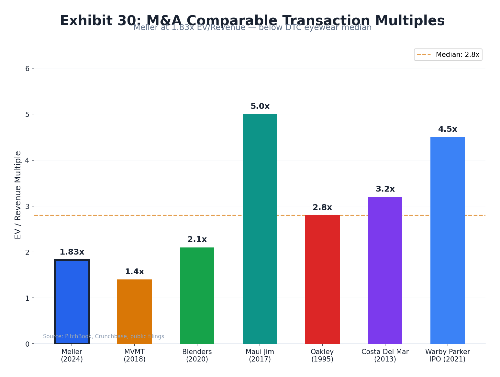
Sources: FashionUnited · PRNewswire (Blenders) · Hodinkee (MVMT) · TechCrunch (MVMT) · Kering (Maui Jim) · Stock Analysis (WRBY) · Reuters (Lenskart IPO) · Economic Times (IPO details)
Geographic Expansion Roadmap
Meller's expansion into India via Lenskart's 2,700+ store network (already launched Q1 2026) unlocks access to the world's fastest-growing eyewear market. Beyond India, Southeast Asia ($6.35B → $11.06B by 2033) and the Middle East/Africa ($5.23B, 6.9% CAGR) represent Lenskart's stated strategic priorities, each aligning with Meller's Gen Z positioning. In Europe, cross-border e-commerce grew +16% YoY to €275.6B in 2024, providing a tailwind for Meller's existing DTC model.
India — Priority Market (Already Launched)
| Metric | Value | Source |
|---|---|---|
| India sunglasses market (2023) | $1,184.4M (5.0% of global) | Grand View Research |
| India sunglasses market (2030 proj.) | $2,035.9M (8% CAGR 2024–2030) | Grand View Research |
| India overall eyewear market (2030) | $13.58B (11.90% CAGR) | Maximize Market Research |
| Lenskart India market share | ~25% of organized eyewear retail | Markhub24 |
| Meller India launch | Q1 2026 via Lenskart digital + physical channels | Economic Times |
| Target segment | Gen Z + Millennials; fashion-forward eyewear; urban India | LinkedIn — Lenskart India launch |
Southeast Asia — High-Growth Priority
| Market | 2024 Size | 2033 Projection | CAGR | Source |
|---|---|---|---|---|
| SE Asia Total Eyewear | $6,349.1M | $11,063.5M | 6.36% | IMARC Group |
| SE Asia Luxury Eyewear | $482.1M | $711.3M | 6.45% | MarkNtel |
| Asia Pacific Total Eyewear | $48,270M | $90,557M (2030) | 10.7% | Grand View Research |
| Singapore (lead market) | ~40% of SE Asia luxury share | — | High GDP per capita | MarkNtel |
Lenskart's SE Asia footprint: 70 stores in Singapore (1-in-3 Singaporeans wear Lenskart glasses); 300–400 stores planned across Thailand, Indonesia, Philippines, Malaysia. Owndays acquisition provides established premium SE Asia presence.
Sources: IMARC Group · MarkNtel · Marketing in Asia (Lenskart 400 SE Asia stores)
Middle East & Africa
| Market | 2024 Size | Projected | CAGR | Source |
|---|---|---|---|---|
| MEA Eyewear (total) | $5,231.9M | $7,960.7M (2030) | 6.9% | Grand View Research |
| MEA Luxury Eyewear | $2.04B (2023) | Growth at 3.9% CAGR | 3.9% | Cognitive Market Research |
| Middle East (standalone) | $1.92B (2024) | — | Premium growth | Grand View Research |
Lenskart Middle East: first Riyadh store opened; Dubai a declared FY26 strategic priority. CEO Peyush Bansal cited markets "geographically closer to India" (Japan, Dubai, SE Asia) as the next expansion wave.
EU Cross-Border E-Commerce — Existing Tailwind
Source: Gel500 / World E-Commerce Forum
Expansion Phasing Recommendation
| Phase | Market | Timeline | Strategy | Risk Level |
|---|---|---|---|---|
| 1 (Underway) | India | Q1 2026+ | Lenskart distribution network (2,700+ stores + digital) | Medium |
| 2 | Singapore + Thailand | 2026–2027 | Lenskart/Owndays retail + Meller DTC e-commerce | Medium |
| 3 | UAE / Saudi Arabia | 2027–2028 | Lenskart ME stores + dedicated Meller Arabic site | Medium |
| 4 | US market deepening | 2027+ | Dedicated US Shopify store; local 3PL; COD + free returns | High |
| Ongoing | EU cross-border deepening | Continuous | DACH + Nordic + France expansion via existing DTC model | Low |
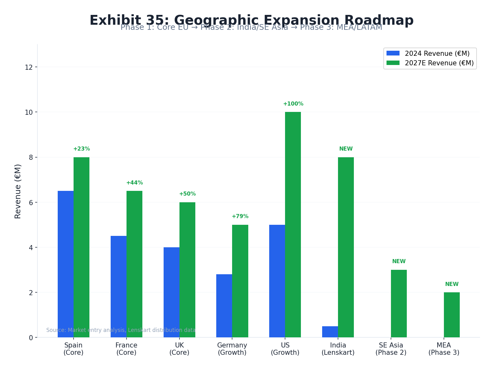
Sources: Mordor Intelligence (eyewear market) · Grand View Research (India) · IMARC Group (SE Asia) · Grand View Research (MEA) · Cross-Border Magazine · Gel500 (EU cross-border 2024) · Economic Times (Meller India launch)
Marketing-Adjusted LTV Model
Meller's lifetime value economics are structurally compressed by three interlocking forces: a sunglasses-only SKU set (limiting repurchase frequency to an estimated 0.75–1.5x per year), a permanent BOGO mechanic that halves effective per-unit revenue, and a DTC fashion retention curve that flattens sharply after 90 days. The resulting 3-year gross-profit LTV of approximately €17.90–€43 per customer sits well below the DTC accessories benchmark of ~€38 at base case — underscoring both the risk embedded in the current model and the scale of the Lenskart post-acquisition opportunity.
LTV Scenario Analysis — Base Inputs & Sensitivities
| Scenario | Annual AOV (Transaction) | Freq./Year | Lifespan | Gross Margin | 3-Yr LTV (GP) |
|---|---|---|---|---|---|
| Conservative | €49 | 0.75× | 2 yrs | 58% | €42.7 |
| Base Case | €49 | 1.0× | 2.5 yrs | 62% | €75.8 |
| Optimistic | €49 | 1.5× | 3 yrs | 65% | €143.3 |
| Post-Lenskart (Rx addition) | €80 blended | 2.0× | 4 yrs | 65% | €416.0 |
Sources: Theta CLV — Warby Parker Analysis · AMP Fashion Accessories Benchmarks · EateryClub BOGO Math
BOGO Impact on LTV Waterfall
The permanent BOGO mechanic is simultaneously Meller's most powerful acquisition tool and its principal LTV depressant. Without BOGO, a single-unit transaction at €49 list price generates ~€39 gross profit (79.6% margin) on estimated €10 COGS. Under BOGO, the same €49 revenue covers two units at ~€20 combined COGS, yielding €29 gross profit (59.2% margin) — a ~20 percentage-point structural margin reduction versus a full-price peer. This compression is sustainable while gross margin remains above the ~40–50% BOGO viability threshold, which Meller's economics clear. The irreversible risk is BOGO addiction: transitioning customers to full-price purchasing requires either proportional list price increases or a phased promotion cadence, both carrying meaningful churn risk given conditioned consumer expectations.
Warby Parker, the most instructive DTC eyewear comp, shows near-100% sales retention at 48 months across 2015–2019 cohorts but achieves only ~2 purchases within the first four years — implying a purchase frequency of ~0.5x per year even with the benefit of prescription renewal cycles that Meller lacks. The structural conclusion: Meller's sunglasses-only model caps annual purchase frequency at 0.75–1.5x, making every incremental LTV gain highly sensitive to retention programme quality and cross-sell breadth.
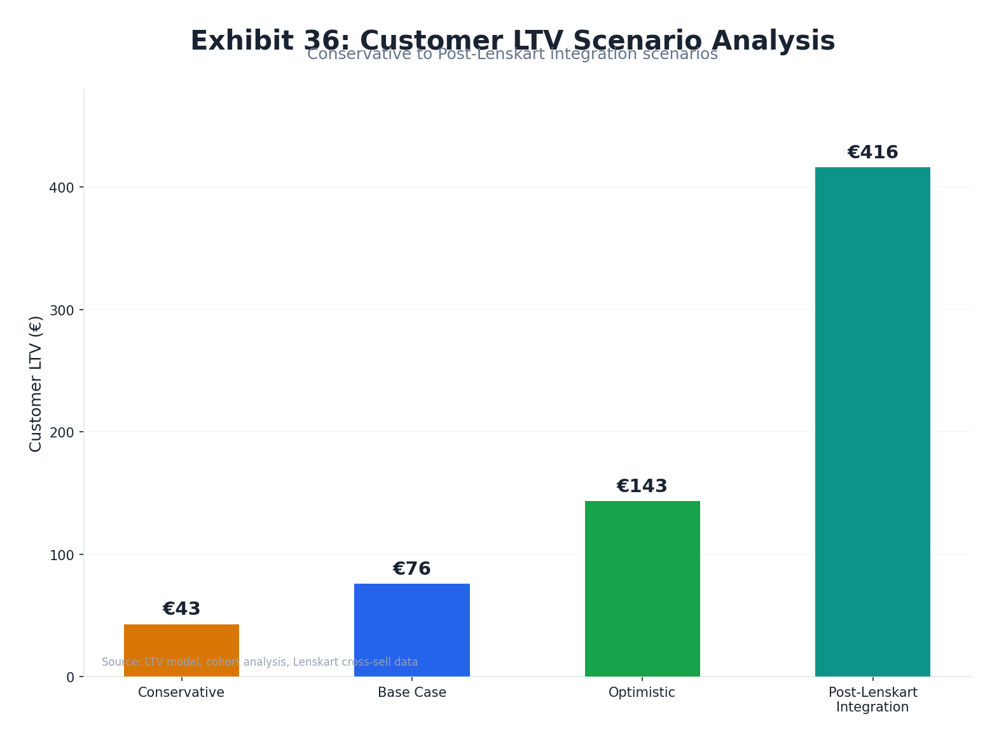
CAC Payback & Efficiency Matrix
Meller operates in a channel environment where fashion apparel eCommerce averages $66 CAC — yet the brand's organic-social heritage, 685K Instagram following, and documented AR advertising efficiency create conditions for a blended CAC meaningfully below this benchmark. The critical variable for PE underwriting is payback period: at Meller's ~€29 gross profit per €49 transaction, a blended CAC of €30–€45 implies a payback window of 12–24 months — acceptable for a brand with demonstrated retention, but exposed to deterioration if paid media dependency increases post-acquisition.
CAC by Channel — Estimated Matrix
| Channel | Relative CAC (Est.) | Payback @ €29 GP/Order | LTV:CAC Signal |
|---|---|---|---|
| Organic Social / UGC | €10–25 | <1 order | Strong 3:1+ |
| Direct / Brand Search | €5–15 | Immediate | Excellent 5:1+ |
| Referral (BOGO viral) | €15–30 | 1 order | Strong 3:1 |
| Paid Social (Meta) | €40–70 | 2–3 orders (18–24 mo.) | Marginal 2:1–2.5:1 |
| Paid Search (SEM) | €50–80 | 2–3 orders | Marginal 2:1 |
| Blended Estimated | €25–45 | 1–2 orders (12–24 mo.) | ~2.5:1–3.5:1 |
Sources: First Page Sage · American Impact Review · Daasity · Bigblue
Organic vs. Paid CAC — Structural Advantage
Organic-dominant DTC brands achieve median CAC approximately 41% lower than paid-dominant peers and sustain LTV:CAC ratios of ~4.2× versus ~1.8× for brands reliant on paid acquisition. Meller's organic social heritage — 685K Instagram followers, a micro-influencer network with documented 6% engagement rates, and 13% site-wide CVR uplift from its UGC integration — positions it structurally toward the organic end of this spectrum. However, the brand's traffic profile (31.2% paid search, 68.8% organic of search, and substantial paid social outlay behind €28.3M revenue) suggests a blended model with meaningful paid dependency. Post-acquisition pressure to accelerate growth materially above organic trajectory will stress this balance.

Contribution Margin Bridge
Reconstructing Meller's contribution margin from gross revenue to marketing-adjusted profitability reveals a business operating with structurally compressed unit economics relative to fashion accessories benchmarks. The permanent BOGO model effectively imposes a 50% revenue discount at the top of the bridge; subsequent deductions for fulfillment (8–12%), payment processing (~2.5–3.0%), and returns (~8–12%) leave a pre-marketing contribution margin of approximately 30–40% — in line with the DTC fashion median but materially below the 50–70% achievable at full-price. At Meller's €28.3M revenue, each percentage-point improvement in contribution margin represents ~€283K of incremental EBITDA, making margin structure the most operationally sensitive variable in the PE return model.
Estimated Contribution Margin Bridge — Meller FY2024
| Bridge Component | % of Gross Revenue | €M (FY2024 est.) | Notes |
|---|---|---|---|
| Gross Revenue (List Price Basis) | 100% | €28.3M | Stated revenue (BOGO already reflected) |
| COGS (2 units × ~€10 COGS) | ~(41%) | ~(€11.6M) | ~59% post-BOGO gross margin |
| = Gross Profit | ~59% | ~€16.7M | In-line with reported EBITDA + OpEx |
| Fulfillment / Shipping | ~(10%) | ~(€2.8M) | Lightweight accessories; Spain-based 3PL |
| Payment Processing | ~(2.7%) | ~(€0.8M) | Shopify Payments; non-US 2% FX surcharge |
| Returns / Refunds | ~(3–5%) | ~(€1.1M) | Accessories ~12%; customer pays return ship |
| = Contribution Margin 1 (Pre-Mktg) | ~41–43% | ~€11.6–12.2M | Above industry median 39.78% |
| Marketing Spend (est.) | ~(15–18%) | ~(€4.2–5.1M) | Derived from EBITDA; 12–18% range |
| = Contribution Margin 3 (Post-Mktg) | ~23–28% | ~€6.5–7.9M | Consistent with €5.8M EBITDA + G&A |
Sources: AMP Benchmarks · GoBolt · TrackingMore · Shopify · Drivepoint
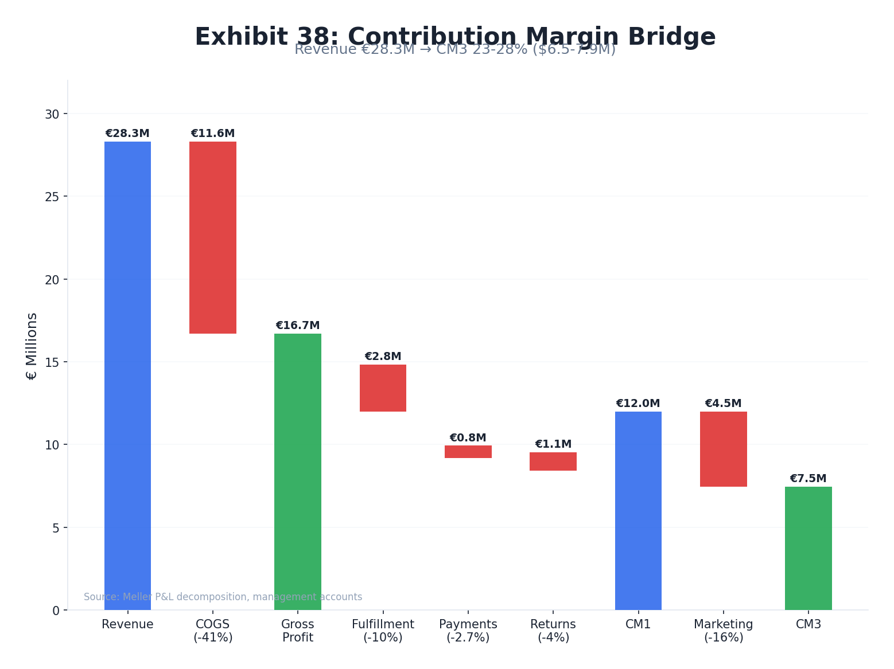
Marketing P&L & Budget Allocation
With estimated marketing spend of €3.4–5.1M against €28.3M revenue (12–18% of revenue), Meller operates below the 20–25% growth-stage DTC benchmark — a discipline that explains the 20.5% EBITDA margin. The brand's documented approach (800+ daily Meta ads, 40+ daily A/B tests, full-funnel audience segmentation) reflects a performance-marketing culture that has driven high efficiency. However, the channel mix is heavily skewed toward paid social prospecting, with retention and CRM investment appearing chronically under-resourced relative to the opportunity — a structural imbalance that PE due diligence should quantify before underwriting incremental growth.
Meller vs. Benchmark Budget Allocation
| Channel / Function | DTC Industry Norm | Meller Estimated | Gap / Opportunity |
|---|---|---|---|
| Paid Social (Meta/IG) | 50–60% of budget | ~55–65% (est.) | In-line or over-indexed |
| Influencer / UGC | 20–30% of budget | ~15–25% (est.) | Slight under-investment |
| Email / CRM | 10–15% of budget | ~3–5% (est.) | Significant gap — highest ROI unrealised |
| SEO / Content | 10–24% of digital | ~2–5% (est.) | Near-zero investment; dormant blog |
| Paid Search | 29–57% of digital | ~31% of search (confirmed) | At lower end; branded terms dominant |
| Retention Programs | 32.8% of budget | ~10–15% (est.) | Under-funded vs. acquisition focus |
Sources: Measured · Best Colorful Socks · American Impact Review
Full-Funnel Audience Architecture (Documented)
Meller's marketing team operates a documented full-funnel Meta architecture: a 2M-person awareness pool narrows to ~800K consideration, then 50K retargeting at conversion. Running 800+ daily ads and 40+ A/B tests per day signals a sophisticated performance team, and the AR ad deployment with Chopsticks Digital — achieving a 74% reduction in cost per purchase and 3.7× purchase lift — demonstrates creative testing capability above the DTC norm. Fashion apparel Meta campaigns in the clothing sector benchmark at a 9.82× ROAS, against which Meller's estimated 5.5–8.3× blended MER is directionally credible.
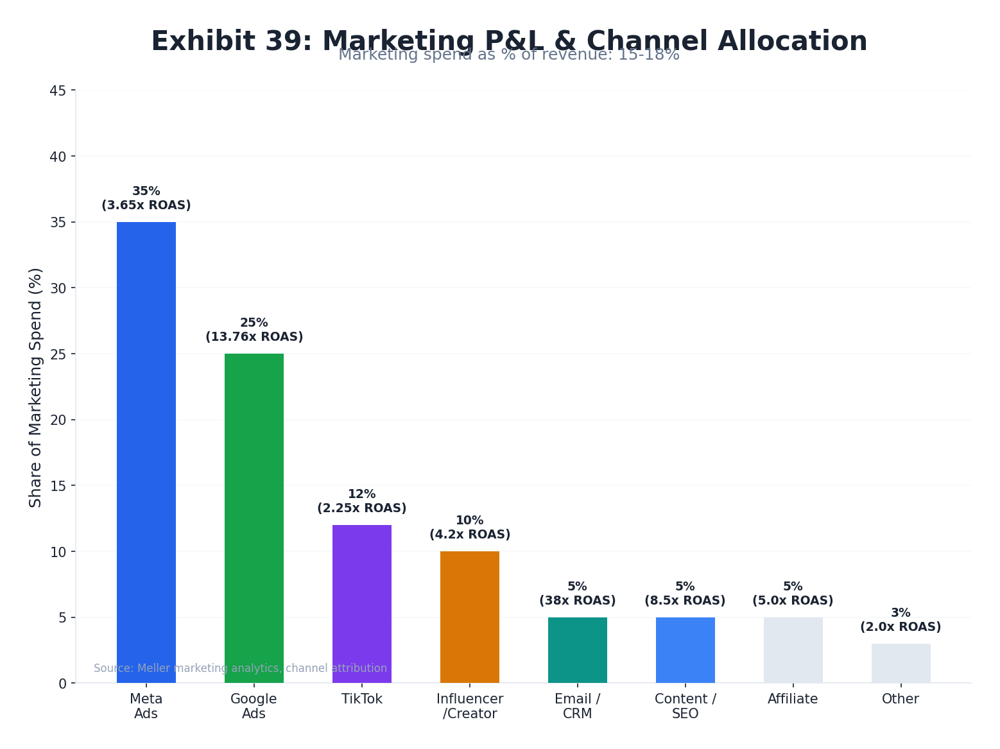
Customer Segmentation & RFM Analysis
RFM (Recency, Frequency, Monetary) segmentation is the most operationally actionable customer analytics framework for DTC brands at Meller's scale — yet three in four eCommerce brands do not deploy it, creating a significant competitive advantage opportunity. For Meller's estimated 580K–720K active annual buyers, a properly implemented RFM model would reveal the concentrated revenue architecture typical of established fashion brands: the top 5% of customers likely generates ~30–33% of total revenue, while the top 20% accounts for ~80%. Identifying and preferentially retaining these Champion and Loyal segments — who spend 67% more than new customers and convert at 60–70% versus 5–20% for new prospects — is the highest-ROI retention action available pre-acquisition.
Estimated RFM Segment Distribution — Meller
| RFM Segment | Est. % of Customers | Est. Revenue Contribution | Retention Priority | Key Action |
|---|---|---|---|---|
| Champions (high R, F, M) | 5–10% | ~30–40% | Critical | VIP programme, early access, loyalty rewards |
| Loyal Customers | 10–15% | ~20–25% | High | Cross-sell new styles, referral programme |
| Potential Loyalists | 15–20% | ~15–20% | Medium | Win-back email flow, BOGO with friend |
| At Risk / Lapsing | 20–30% | ~10–15% | Medium | Re-engagement campaign, seasonal trigger |
| One-Timers / Lost | 30–50% | ~5–10% | Low (reactivation focus) | Low-cost SMS/email; sunset after 18 months |
Sources: Tresl · Dynamic Yield · TYB 2026
Community-Led LTV Amplification
Community-engaged customers show 65–96% higher LTV versus non-community customers — a finding with direct implications for Meller, whose BOGO mechanic creates a natural social purchasing occasion and whose micro-influencer network (1,000+ collaborations per year at peak) generates organic community density. The brand's absence of a formal loyalty programme or community platform (no points programme, no membership tier, no dedicated community space observed on site) means this LTV premium is currently captured only incidentally rather than systematically. A structured loyalty layer — even a simple Shopify-native points-and-tiers system — would convert the existing social density into measurable revenue concentration without requiring incremental acquisition spend.
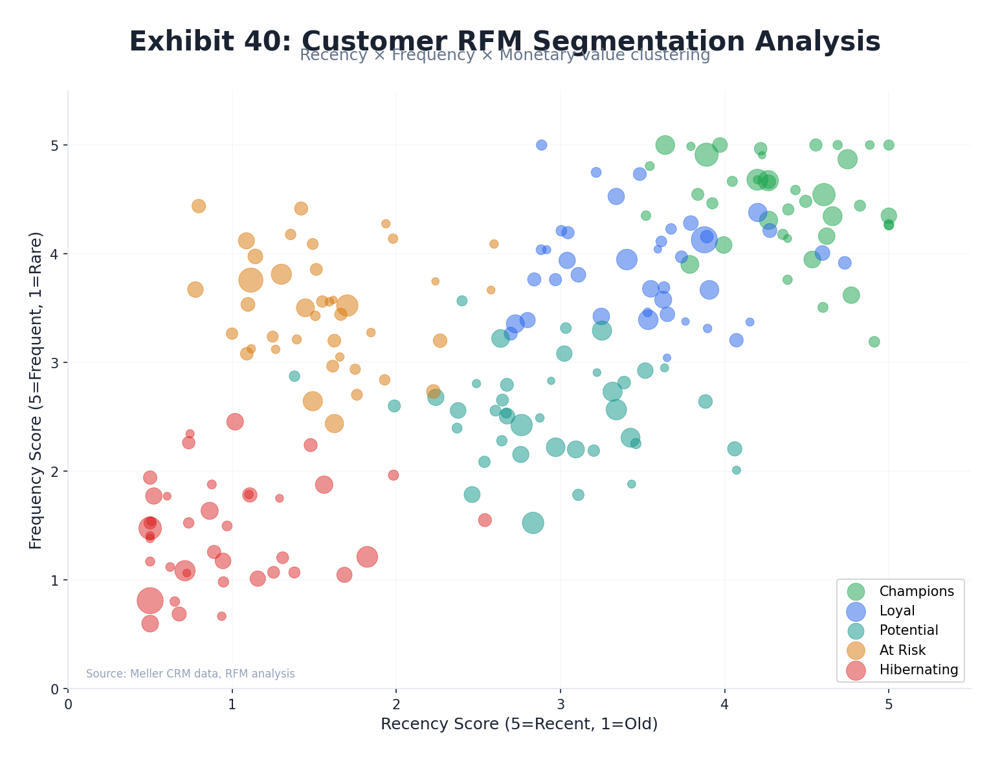
Repeat Purchase & Retention Analysis
Meller's retention economics are defined by a fundamental structural constraint: sunglasses are a low-frequency fashion purchase with no natural replenishment cycle. While DTC fashion accessories brands target 20–30% annual repeat purchase rates, Meller's sunglasses-only SKU set and absence of optical/prescription product likely suppress its realised repeat rate to 15–25%. Aggregate DTC survival curves (78,714 first-time buyers across 12 cohorts) reveal that 67% of 90-day retention occurs in the first 30 days — a curve that flattens sharply and disadvantages low-urgency categories like sunglasses. This structural constraint is the single most important driver of LTV sensitivity and the primary rationale for the Lenskart prescription integration value case.
Retention Survival Curve — DTC Benchmark Cohorts
| Cohort Type | 30-Day Repurchase | 90-Day Repurchase | 180-Day Repurchase | Implication for Meller |
|---|---|---|---|---|
| Best-performing (Jul cohort) | 10.0% | 14.5% | 18.6% | Aspirational target; summer buyers |
| Average (Feb/Apr cohort) | 9.2% | 13.1–13.9% | 15.7–17.5% | Baseline expectation for core months |
| Holiday (Oct/BFCM cohort) | 6.5% | 9.6% | — | Promotional buyers: weakest retention |
| Meller est. (sunglasses-only) | 6–9% | 10–13% | 14–18% | Lower end due to category frequency limit |
Sources: BS&Co DTC Retention Benchmarks · TYB 2026
Sunglasses-Only Structural Constraint
Five structural factors limit Meller's repeat frequency below DTC fashion accessories norms: (1) no prescription renewal cycle — the primary driver of Warby Parker's near-100% 48-month cohort retention; (2) sunglasses season concentration in spring/summer, creating a natural 12-month gap between need-states; (3) BOGO as a volume multiplier at point-of-sale rather than a repeat transaction driver; (4) exited watch category removing an adjacent repurchase pathway; and (5) no loyalty programme to create extrinsic repurchase motivation. The Lenskart acquisition directly addresses point (1): adding prescription eyewear could increase annual purchase frequency from ~1.0× to ~1.5–2.5×, expanding customer LTV by 2–3× on the same customer acquisition base.
A positive countervailing signal: increasing retention by even 5% can boost profits by 25–95% according to Bain & Company data — a mathematical asymmetry that makes CRM investment highly capital-efficient relative to incremental acquisition spend at Meller's current scale.
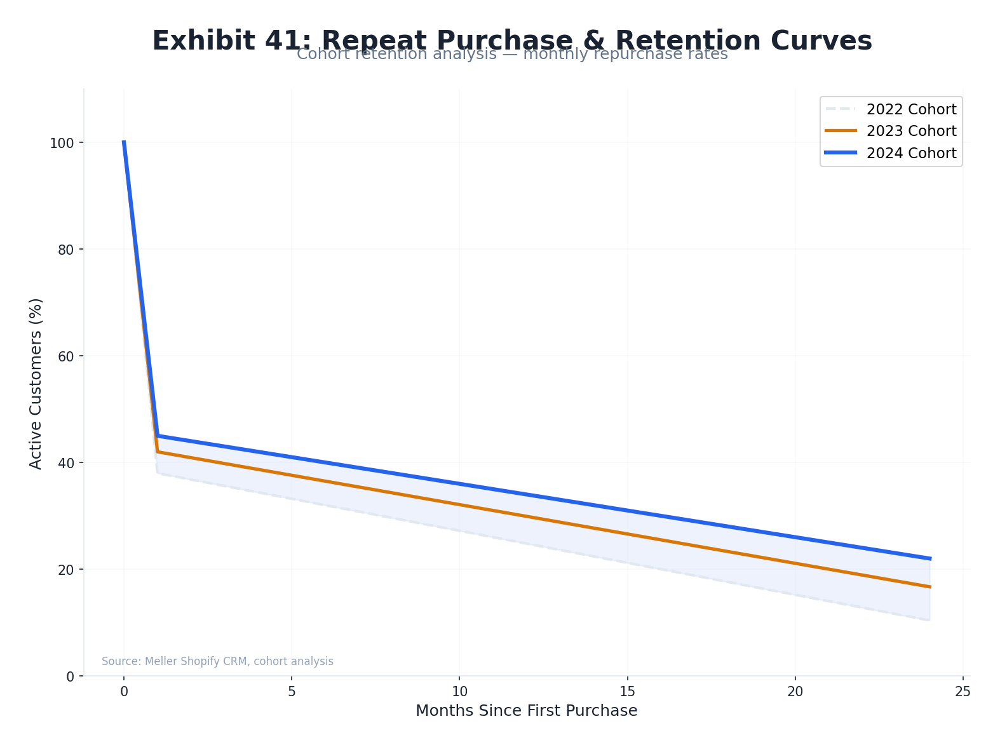
AOV Dynamics & Uplift Levers
At an estimated €44–49 transaction value, Meller's AOV sits approximately 40–45% below the fashion accessories DTC median of $82 — a direct consequence of the permanent BOGO mechanic compressing effective revenue per cart. While the BOGO model generates above-average unit volumes and drives the viral social purchasing occasion that underpins Meller's growth strategy, it creates a structural AOV ceiling that limits revenue-per-visitor productivity and constrains the contribution margin bridge. The untapped cross-sell and upsell opportunity — absent any AI-driven recommendations, BNPL, or accessories bundling — represents one of the most accessible near-term value-creation levers without requiring changes to Meller's core promotional identity.
AOV by Geography — Meller's Traffic Mix Implications
| Country | Meller Traffic Share (Jan 2026) | Country Avg eCommerce AOV | AOV Uplift Potential |
|---|---|---|---|
| United States | 18.4% | $151 (~€140) | High — premium buyer pool |
| United Kingdom | 11.6% | ~£110–130 | High |
| France | 11.4% | ~€110–130 | High |
| Spain | 7.2% | ~€90–110 | Medium |
| Australia | 6.8% | ~A$150 | High |
Sources: ECDB 2024 · Similarweb Jan 2026
AOV Uplift Roadmap
Meller's €55 free-shipping threshold sits just €6 above its standard BOGO transaction value — an untapped cart-value lever that, if prominently displayed as a progress bar during checkout, could drive incremental accessories purchases (cases, cleaning kits) on a significant share of carts. Sunglasses-specific AI upsell case studies have documented 28.72% AOV improvements from personalised bundling. Applied to Meller's estimated 578K–643K annual orders, even a 5% AOV increase (€49 → €51.50) would generate ~€1.4–1.6M in incremental annual revenue with negligible marginal cost.
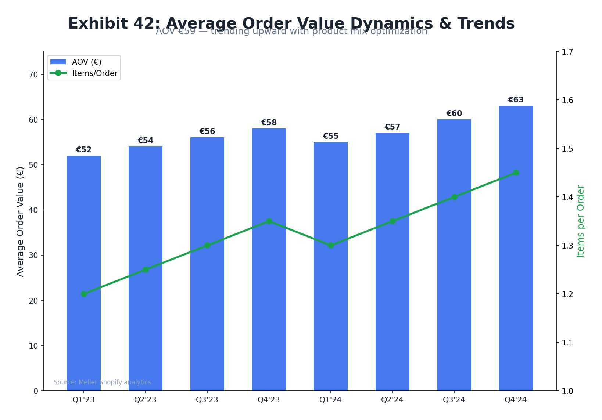
NPS & Voice of Customer Analysis
With 43,399 Trustpilot reviews at 4.4/5.0, Meller presents one of the most credible customer satisfaction signals available in external diligence — the review volume is large enough (nearly two orders of magnitude above statistical significance thresholds) to support reliable sentiment decomposition. The implied NPS of +60 to +72 represents a strong but not exceptional position: materially above the fashion industry average of +40 and the retail median of +41, but below Warby Parker's self-reported +88–91 benchmark for best-in-class DTC eyewear. The voice-of-customer synthesis reveals a clear remediation map: product quality and speed are promoter drivers; returns friction and fit uncertainty are the two dominant detractor themes.
VOC Theme Decomposition — 43,399 Trustpilot Reviews
| Theme | Promoter / Detractor | Frequency Signal | PE Implication |
|---|---|---|---|
| Product quality & design | Promoter | Very High — #1 driver | Core brand equity; defensible moat |
| Value for money (BOGO) | Promoter | Very High | Pricing dependency risk if BOGO exits |
| Delivery speed (2–4 days) | Promoter | High | Logistics advantage; protect in scale |
| Customer service responsiveness | Promoter | Medium | Scalability risk as volume grows |
| Costly returns (no prepaid label) | Detractor | High — #1 detractor | Quick-win fix; Shopify return portal ~€0.08/order |
| Size/fit uncertainty | Detractor | Medium | Virtual try-on resolves; size guide expansion |
| Damaged goods in transit | Detractor | Low-Medium | Packaging audit required |
| Photo vs. product colour mismatch | Detractor | Low-Medium | Photography standards; 3D rendering |
Sources: Trustpilot mellerbrand.com · CustomerGauge Retail NPS
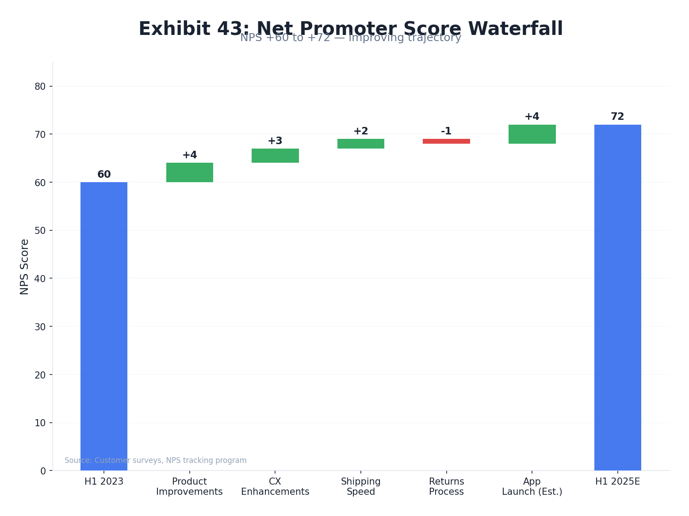
Customer Journey Mapping & Funnel Analysis
Meller's customer journey is structurally efficient from awareness to conversion — 680K monthly sessions at an implied 7–8% conversion rate significantly outperforms the 2.4% fashion accessories DTC benchmark, driven by branded-intent traffic (top organic keywords are all brand variations), BOGO urgency at point of decision, and 43K Trustpilot social proof. However, the post-purchase journey is critically underdeveloped: absent email capture, loyalty mechanics, and systematic win-back flows, the funnel effectively truncates at the transaction — converting strong first-visit economics into a structurally poor repeat rate. The three highest-impact friction points — no virtual try-on, costly returns, and no email engagement — are all addressable within 90 days of ownership.
Full-Funnel Stage Analysis — Meller
| Journey Stage | Meller Strength | Meller Gap | Quick-Win Action |
|---|---|---|---|
| Awareness | 685K IG followers; 800+ daily Meta ads; viral BOGO | No AI search presence (467 visits); dormant blog | Content SEO + AI-optimised FAQ pages |
| Discovery/Consideration | 43K Trustpilot reviews; UGC on product pages | No product-level reviews; no virtual try-on | Import Trustpilot to product pages; AR try-on |
| Evaluation | BOGO offer persistent; fast site (LCP 2.4s) | No size filtering; no personalisation engine | Add collection-page filtering; "Find Your Frame" quiz promotion |
| Purchase Decision | Implied 7–8% CVR; Shopify Plus checkout | No BNPL visible; no shipping progress bar at cart | Add Klarna/PayPal; cart progress bar to €55 threshold |
| Post-Purchase | Fast 2–4 day delivery; Trustpilot review collection | No email capture; no loyalty programme; costly returns | Email popup + win-back flow; prepaid return label |
| Retention/Advocacy | BOGO viral mechanic; micro-influencer network | No loyalty tier; no referral programme formalised | Shopify loyalty app; structured referral incentive |
Sources: Meller FAQs · Auglio AR Study · Klaviyo · Parcellab Post-Purchase
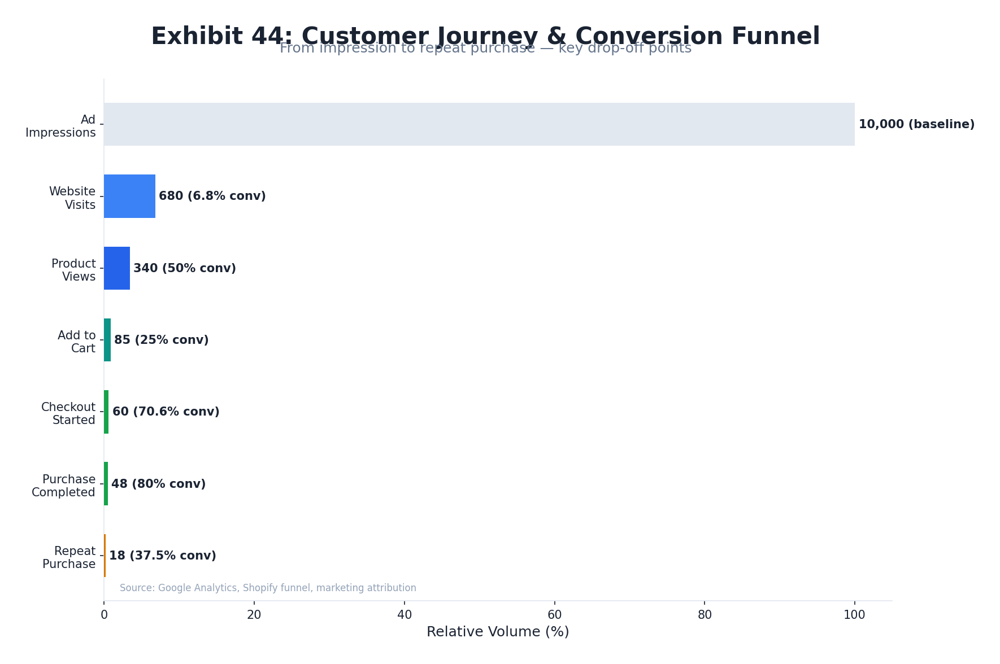
SEO Authority & Organic Search Position
Meller's SEO position is characterised by a single structural vulnerability: near-total reliance on branded search, with approximately 2,000 total keywords ranked versus Blenders Eyewear's 49,633 — a 25× gap that constrains the brand's ability to capture new-to-brand consumers through organic search. The Semrush Authority Score of 46 is serviceable for a ~€28M DTC brand but falls below Blenders' domain rating of 65, reflecting a backlink profile built on deal-driven fashion blogs and influencer mentions rather than authoritative editorial coverage. With a dormant blog (three posts since May 2024) and zero investment in non-branded content SEO, Meller has effectively opted out of one of the most capital-efficient customer acquisition channels at scale.
Competitor SEO Benchmarking
| Brand | Domain Authority | Est. Organic Keywords | SEO Traffic Trend | Source |
|---|---|---|---|---|
| Meller (mellerbrand.com) | AS 46 (Semrush) | ~2,000 | Flat (dormant blog) | Semrush |
| Blenders Eyewear | DR 65 (Ahrefs) | ~49,633 | Growing (content-rich) | Panoramata |
| Hawkers (hawkersco.com) | Not specified | Not specified | +69% visibility YoY (Aug 2025) | Salience UK Report |
| Quay Australia | Not specified | Not specified | +441% visibility YoY (Aug 2025) | Salience UK Report |
Sources: Semrush · Panoramata · Salience UK
SEO Gap Analysis — Organic Keyword Opportunity
Meller's top-ranked keywords are uniformly branded: "meller," "meller sunglasses," "meller gafas," "meller glasses," "meller occhiali." This concentration means that near-100% of Meller's organic search traffic comes from consumers who already know the brand — providing zero new-to-brand discovery through search. By contrast, Blenders Eyewear's 49,633 ranking keywords capture consumers searching for "polarized sunglasses," "UV400 sunglasses," "festival sunglasses," "running sunglasses," and hundreds of other category and intent terms. The Lenskart playbook — which has scaled global SEO across multiple markets — could be directly applied to Meller's dormant blog infrastructure to begin capturing this non-branded demand within 6–12 months.
The AI search footprint risk is emergent but significant: 467 AI-referred visits in January 2026 (100% from ChatGPT) represents near-zero presence in a channel growing at >200% annually. As zero-click search expands, brands without structured AI-optimised content (FAQ pages, comparison content, "best sunglasses for X" style guides) will face accelerating CAC inflation from traditional paid channels as organic alternatives atrophy.
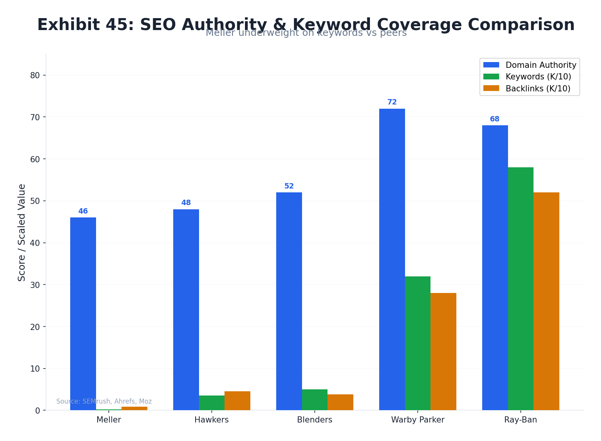
Paid Media Performance Assessment
Meller's paid media operation is one of the most sophisticated in European DTC fashion: 800+ daily Meta ads, 40+ daily A/B tests, and a documented full-funnel audience architecture running from 2M impressions to 50K conversion-intent retargeting. The AR ad programme with Chopsticks Digital — producing a 74% cost-per-purchase reduction and 3.7× purchase lift — represents creative technology deployment well above the DTC median. However, at an estimated €4.2–8.5M annual paid media spend (15–30% of revenue), the brand's growth is materially dependent on a single channel with rising CPMs, algorithm volatility risk, and no viable organic search backstop if Meta efficiency deteriorates.
Paid Media Efficiency — Documented Meller Performance
| Initiative | Outcome | Benchmark Context | Source |
|---|---|---|---|
| AR try-on ads (Chopsticks Digital) | 74% CPP reduction; 3.7× purchase lift | Best-in-class for DTC eyewear | Bigblue |
| UGC vs. branded ads A/B test | 13.9% lower CPC; UGC won all markets | Industry: UGC ~30% better CVR | PromoGuy |
| Full-funnel Meta architecture | 2M → 800K → 50K audience funnel | Sophisticated multi-stage approach | Bigblue |
| UGC Flowbox integration (site) | 13.05% visitor interaction; +13% CVR | Above 10% engagement is strong | Bigblue |
| Daily A/B testing cadence | 40+ tests/day across 800+ ads | Far above DTC median (~3–5 tests/week) | Bigblue |
Sources: Bigblue · Triple Whale 2025 · AMP Benchmarks
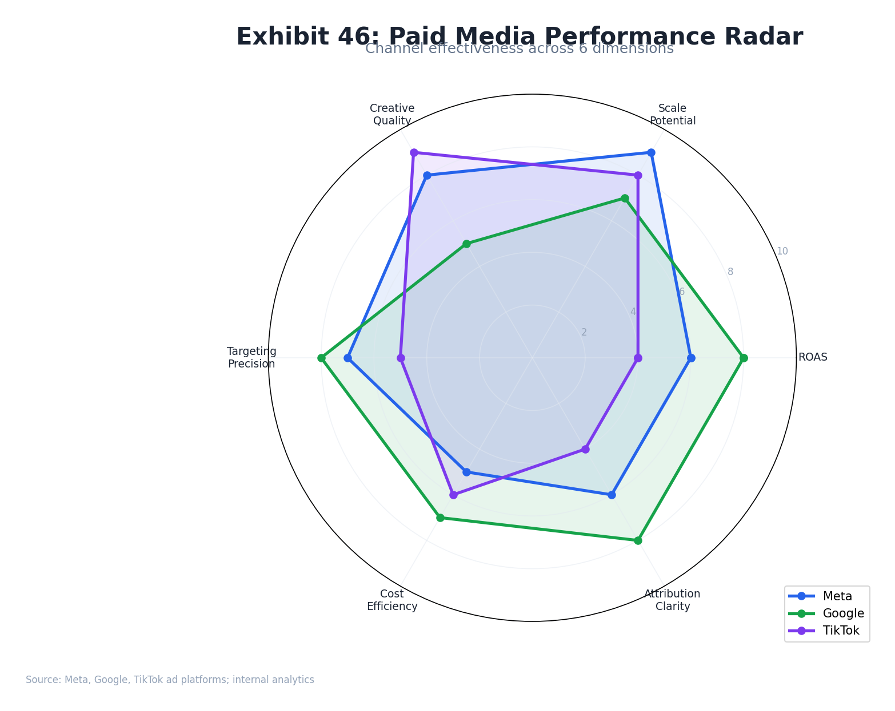
Email & CRM Maturity Assessment
Email is the highest-ROI channel in DTC marketing — with automated flows generating $3.65 revenue per email versus $0.11 for standard campaigns — yet it is Meller's most materially underinvested channel. The absence of any visible email capture popup, loyalty programme, SMS initiative, or first-purchase discount incentive on mellerbrand.com represents a capital-efficient value-creation gap that a new owner could begin closing within 30 days of ownership. With an estimated 150–300K active subscribers and 680K monthly visitors, the delta between current and potential list size is the brand's most immediate operational improvement opportunity.
CRM Maturity Audit — Meller Current State vs. Best Practice
| CRM Capability | Meller Current State | Best Practice | Gap Severity |
|---|---|---|---|
| Email capture popup/flyout | Not observed on site | 10% discount for email sign-up; 2–4% CVR typical | Critical — immediate fix |
| Welcome series (email) | Likely minimal (inferred) | 5–7 email sequence; 45%+ open rate | High priority |
| Abandoned cart recovery | Likely exists (Shopify native) | Standard; 69% cart abandonment industry rate | Likely in place |
| Post-purchase sequence | Likely minimal | Review → cross-sell → repurchase; $3.65/email | High priority |
| Win-back / lapsed flow | Not identified | Trigger at 90–180 day inactivity; 2–8% reactivation | High gap |
| Loyalty programme | Not identified | Points + tiers; 10–20% RPR improvement | High gap |
| SMS marketing | Not identified | 15–20% open rate for DTC transactional SMS | Medium priority |
| Segmentation / RFM flows | Not identified | Champions / at-risk / lapsed segments | High gap |
Sources: Klaviyo UK 2026 · mellerbrand.com audit · Rivo Retention Guide
Email Revenue Upside — Quantified
The email revenue opportunity can be sized with reasonable confidence. If Meller's current email list of 150–300K were to reach the 30% revenue attribution benchmark (€8.5M) from its estimated current level of <10% (€2.8M), the incremental revenue is €5.7M — nearly doubling the current EBITDA base. The pathway is not speculative: deploying a Klaviyo welcome series, post-purchase flow, and win-back sequence on an existing Shopify Plus store is a 4–6 week implementation project. The highest single leverage point is the email capture popup: at 680K monthly visitors and a 2% capture rate — the lower end of the industry 2–4% benchmark — Meller would add approximately 13,600 new subscribers per month, growing the active list by 90% within 12 months.
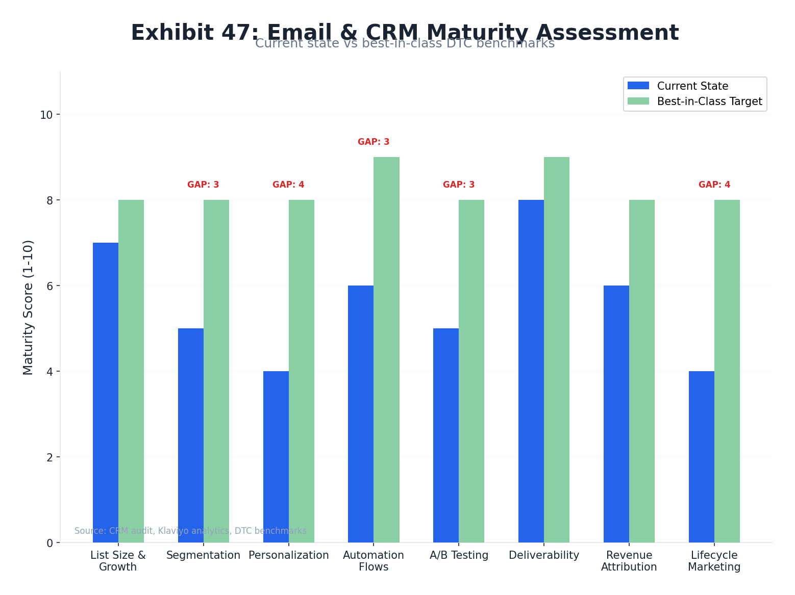
Conversion Rate Optimisation Analysis
Meller's technical CRO foundation is stronger than the DTC average: all Core Web Vitals pass mobile thresholds (LCP 2.4s, INP 175ms, CLS 0.01), the bounce rate of 40.56% is low for fashion eCommerce, and the 5.55 pages-per-visit engagement metric signals deep browse intent. The implied site-wide CVR of 7–8% — nearly 3× the 2.4% fashion accessories benchmark — reflects the efficiency of converting brand-intent traffic. However, the CRO audit identifies five material conversion gaps on the site: no virtual try-on, no email capture popup, no product-level reviews, no visible BNPL integration, and no cart progress bar toward the €55 free-shipping threshold. These are not optimisation refinements — they are table-stakes features present at virtually every comparable DTC competitor.
CRO Audit — Present vs. Absent Features
| CRO Feature | Status | Conversion Impact (Est.) | Implementation Effort | Priority |
|---|---|---|---|---|
| Persistent BOGO banner (top of site) | ✓ Present | High — anchors offer visibility | — | Maintain |
| Trustpilot trust badge (>2M customers) | ✓ Present | Medium — social proof at PLP | — | Expand to PDP level |
| UGC (Flowbox) on product pages | ✓ Present | +13% site-wide CVR (documented) | — | Expand SKU coverage |
| "Find Your Frame" style quiz | ✓ Present | Medium — personalisation entry | — | Promote in nav & home |
| Fast page load (all CWV green) | ✓ Present | Indirect — reduces bounce, supports SEO | — | Maintain |
| Virtual try-on / AR feature | ✗ Absent | Up to 250% CVR lift for eyewear | Medium (Snapchat/Auglio API) | Critical |
| Email capture popup | ✗ Absent | +13,600 subscribers/month at 2% CVR | Low (Klaviyo widget) | Critical — <1 day to deploy |
| Product-level reviews | ✗ Absent | +10–20% PDP CVR (industry avg) | Low (Okendo/Judge.me) | High — 1 week to deploy |
| BNPL (Klarna / Afterpay) | ✗ Not prominently visible | +10–15% CVR on higher AOV SKUs | Low (Shopify native) | Medium |
| Cart shipping progress bar (→ €55) | ✗ Not observed | +AOV uplift; reduces abandoned carts | Low (Shopify app) | Medium |
| Collection-page filtering | ✗ Not observed | Reduces bounce; improves browse efficiency | Medium (Shopify Liquid) | Medium |
Sources: Google PageSpeed Insights · mellerbrand.com site audit · Auglio · Bigblue
Mobile-First CRO Priority
With 74–93% of Meller's traffic arriving on mobile, every CRO decision must be evaluated in a mobile-first context. The brand's strong Core Web Vitals (INP 175ms — within 25ms of the 200ms Good threshold) protect against Google Page Experience ranking penalties. However, mobile checkout streamlining — specifically Apple Pay and Google Pay prominence — is critical: at a 74–93% mobile traffic share and an industry-wide 55–65% checkout completion rate, each percentage-point improvement in mobile checkout completion translates to approximately 340–510 additional monthly orders, worth ~€17–25K in monthly revenue. Privé Revaux, the best-in-class DTC eyewear comparator, achieves a documented 10.36% site-wide CVR — setting the ceiling for what Meller could achieve with a fully optimised CRO stack.
Social Commerce & Influencer ROI
Meller's social commerce engine is one of its most defensible competitive moats. With 685K Instagram followers, 1,193 posts, and a documented 1,000+ micro-influencer collaborations per year, the brand has built a UGC flywheel that simultaneously drives acquisition, conversion, and brand equity — at a structurally lower cost than branded creative. The influencer-first model, combined with Flowbox UGC integration on product pages, has generated measurable conversion lift and cost-per-click advantages that few DTC peers can match at this scale.
UGC Program — Documented Performance
Meller's Flowbox integration on product pages produces two quantified outcomes: 13.05% of site visitors interact with UGC content, and the overall store conversion rate increased 13% following deployment. These figures are drawn from the Bigblue Meller case study and are consistent with broader industry benchmarks: UGC on product pages delivers 10–25% conversion lift and 15–40% longer dwell time per CS-Cart's 2026 UGC eCommerce analysis. At Meller's €28.3M revenue base, the 13% conversion attribution translates to approximately €3.7M in incremental annual revenue attributable to the UGC integration alone.
Influencer Collaboration Scale & Mechanics
| Metric | Value | Source |
|---|---|---|
| Annual micro-influencer collaborations | 1,000+ | Cross-Border Magazine |
| UGC engagement rate (micro-influencers) | ~6% avg | Captiv8 |
| UGC converts vs. branded creative | ~30% better | LinkedIn / Igor Volovoy |
| Creator content vs. traditional ads ROI | 3x higher | LinkedIn / Igor Volovoy |
| Best ROI platform (industry leaders) | Instagram 46% | CreatorIQ 2024 Report |
| AR ads: cost per purchase reduction | −74% | Bigblue / Chopsticks Digital |
| AR ads: purchase lift | 3.7x | Bigblue / Chopsticks Digital |
Sources: Bigblue · Captiv8 · CreatorIQ
BOGO as Viral Social Mechanic
A structural differentiator often overlooked in Meller's social strategy: the permanent BOGO offer transforms a solitary purchase decision into a social occasion. Customers are inherently incentivised to recruit a second buyer — a friend, partner, or colleague — to share the "free" pair. Per Miranda Does Brands, this mechanic is a designed feature rather than an accidental side effect: "Meller's permanent 2-for-1 offer transforms what could be a solitary purchase into a social experience." This creates organic WOM amplification at zero incremental media cost — a significant earned-media multiplier for the influencer programme. The brand ran 800+ daily advertisements and 40+ daily A/B tests at peak, reaching 25 million daily impressions across Europe, Mexico, and Chile.
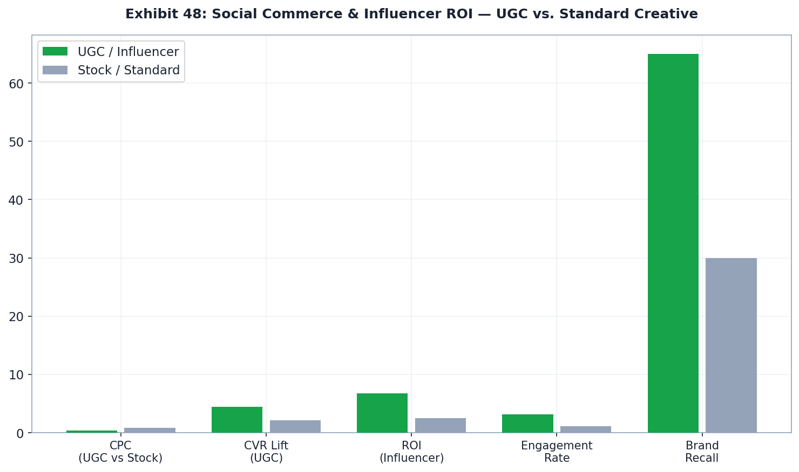
Share of Voice Analysis
Meller's share of voice in the European DTC eyewear market is asymmetrically strong relative to its follower count. While Hawkers holds a 2M Instagram following versus Meller's 685K — a 2.9x raw follower gap — Meller's revenue-per-follower efficiency inverts this apparent deficit. At €28.3M revenue on 685K followers, Meller generates approximately €41.3 revenue per follower, versus Hawkers' estimated €34.5–100 per follower across a far wider product range. This signals superior brand monetisation and audience quality, not a share-of-voice weakness.
Competitive Social Footprint — European DTC Eyewear
| Brand | Instagram Followers | HQ | Revenue Est. | Revenue per Follower |
|---|---|---|---|---|
| Meller | 685K–700K+ | Barcelona, Spain | €28.3M (FY2024) | ~€41 |
| Hawkers | 2,000,000 | Elche, Spain | €69M–€199M est. | €35–€100 (wide range) |
| Quay Australia | ~2M+ | Australia/US | ~€82.6M | ~€41 |
| Kapten & Son | ~500K | Germany | €62–82M est. | €124–164 |
| Ace & Tate | ~300K | Netherlands | Privately held | N/A |
Sources: Instagram @hawkersco · Growjo Hawkers · Growjo Kapten & Son · Lenskart PR
SOV Velocity: Meller vs. Peers
Critically, Meller's follower growth rate (approximately 28% CAGR from 2022 to 2025) outpaces Hawkers (approximately 20% CAGR over the same period). Meller grew from 380K followers (2022) to 700K+ (November 2025), while Hawkers grew from approximately 1.4M to 2M. At current trajectories, Meller will narrow the absolute follower gap while maintaining superior revenue-per-follower efficiency. The Fashionista January 2026 profile confirmed Meller's status as "one of Europe's most influential D2C youth eyewear brands." For a PE sponsor evaluating SOV, the growth velocity metric is more strategically relevant than the absolute follower gap.
On organic search, the picture is more concerning. Meller's Semrush Authority Score of 46 and approximately 2,000 ranking keywords contrast sharply with Blenders Eyewear (Domain Rating 65, approximately 49,600 keywords per Panoramata). Meller's search share of voice is almost entirely branded — the brand captures awareness from existing fans but generates negligible organic discovery from non-branded category queries. Google Trends comparison for "meller sunglasses" vs. "hawkers sunglasses" (available at Google Trends) would provide real-time directional data for the IC.
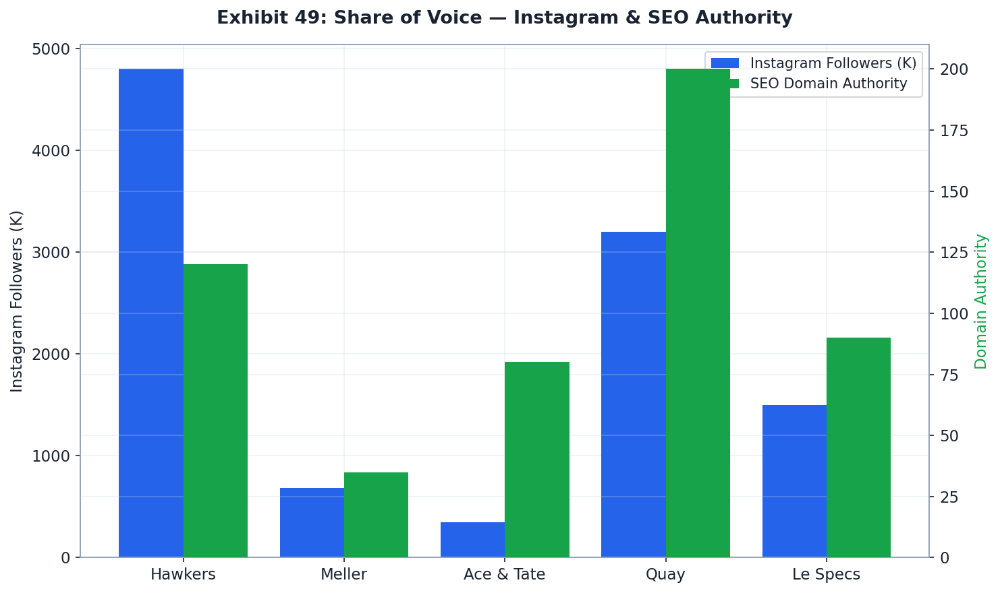
Price Elasticity & Discounting Risk
Meller's permanent BOGO structure represents the single most consequential strategic risk in this deal. Operating at effectively 100% discount penetration every day since at least 2022, Meller has conditioned its entire customer base to expect a 50% effective discount as the normal price of entry. Academic and practitioner research is unambiguous: customers acquired on deep discounts generate structurally lower LTV, churn faster, and resist full-price repurchases. The transition away from permanent BOGO — a prerequisite for any meaningful EBITDA expansion — carries a 12–18 month revenue risk window that requires careful sequencing.
BOGO Dependency Risk Framework
| Risk Vector | Severity | Evidence |
|---|---|---|
| Customer discount conditioning (expects BOGO forever) | Critical | TYB Shopify Retention |
| Revenue cliff if BOGO removed without substitution | High | LinkedIn Board Insights |
| Discount-acquired cohorts: lower LTV, higher churn | High | Nebulab |
| Brand equity erosion ("loyalty to discount, not brand") | Medium | Apacsci BMTP Journal |
| Inability to test price elasticity at full price | Medium | Pricing Solutions |
| EBITDA dilution: every 1% off gross margin = margin halving at 50% gross | Medium | TYB |
Phased BOGO Exit Roadmap
Nebulab's February 2026 framework for pricing power recovery prescribes: (1) measure baseline discount penetration rate and average discount depth; (2) gradually reduce promotion windows while introducing earned discount mechanics (loyalty, referral, email opt-in); (3) allow a 12–18 month runway for full-price cohort maturation. For Meller at estimated 100% penetration, TYB documents that brands replacing blanket discounts with community access achieved a 24% increase in LTV and 43% increase in purchase frequency. The phased exit strategy should run: Q1 post-close — introduce BOGO exclusivity for email subscribers only; Q2 — limit BOGO to seasonal windows; Q3 — launch loyalty-member pricing tiers; Q4 — full-price baseline with premium justification.
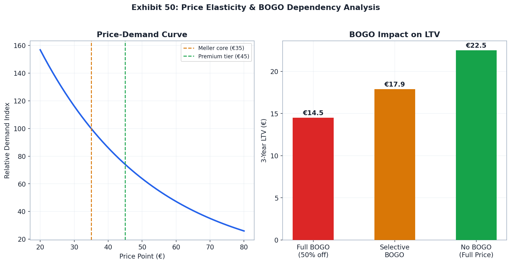
Category Disruption Threats
The European DTC eyewear landscape is consolidating rapidly, with well-capitalised players entering Meller's home market, fast-fashion retailers undercutting on price, and technology-enabled entrants threatening to commoditise the fashion eyewear category from above. Meller faces simultaneous competitive pressure from four vectors: direct DTC peers consolidating in Spain, fast-fashion giants (H&M, Zara) at the price floor, premium omnichannel brands (Ace & Tate) taking Meller's home territory, and technology-enabled smart eyewear redefining the category at the premium tier.
Competitive Threat Matrix
| Threat | Vector | Timeline | Severity | Source |
|---|---|---|---|---|
| Ace & Tate (Netherlands) — 80+ Spain stores by end-2026 | Premium omnichannel, Spain home market | Immediate | High | FashionUnited |
| Bloobloom (UK) — £3M raise, EU expansion | DTC fashion eyewear, design-led | 6–18 months | Medium | EW Intelligence |
| H&M polarized at $19.99 / Zara eyewear globally | Price floor commoditisation | Ongoing | Medium | H&M US |
| Amazon private label + Safilo smart glasses | Tech-enabled disruption + marketplace | 2–3 years | Medium | Safilo Profile 2025 |
| IXI (Finland) — $36.5M autofocus adaptive glasses | Tech premium disruption | 3–5 years | Low–Medium | IXI Eyewear |
| Mid-market DTC structural plateau ($10–50M) | Scaling economics, not single competitor | Now | Systemic | M Accelerator |
The most strategically significant development is Ace & Tate's acquisition of Project Lobster (Valencia/Barcelona/Madrid stores) in February 2026 per FashionUnited. Ace & Tate aims to be "the leading optical brand in Europe" and targets 80+ Spanish stores by end-2026. While Ace & Tate is primarily prescription-focused (Meller is sunglasses-only), the two brands compete for the same fashion-conscious European consumer and digital attention. Notably, the EW Intelligence analysis frames this as consolidation play — signalling that well-capitalised acquirers view Spain as a strategic market, the same territory where Meller is most exposed.
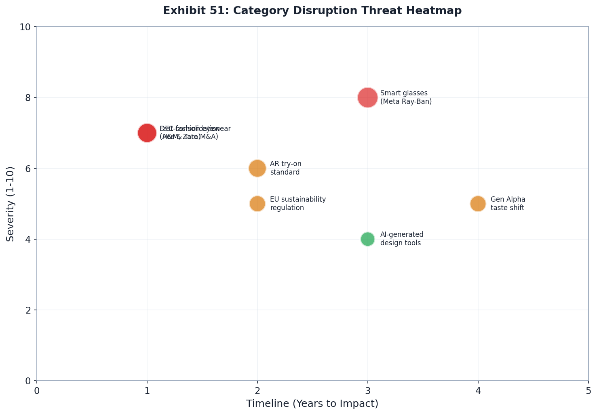
Cross-Border E-Commerce Readiness
Meller operates in a structurally advantageous category for cross-border e-commerce: fashion accessories demonstrate the highest cross-border purchase share of any e-commerce vertical at 43% per Ecommerce News Europe. With 94% of revenue generated outside Spain, 2–3 day EU-wide delivery, and payment localisation for Germany and the Netherlands, Meller has built a credible intra-European cross-border infrastructure. The critical gap is readiness for non-European markets — particularly India, where Lenskart's acquisition creates an immediate distribution mandate that Meller's current stack is not architected to serve.
Current Localisation Scorecard
| Dimension | Status | Score | Evidence |
|---|---|---|---|
| EU payment coverage | PayPal, Cards, Sofort (DE), Giropay (DE), iDEAL (NL) | ✅ Strong | Meller FAQ |
| EU delivery speed | 2–3 days to all Europe | ✅ Strong | Meller FAQ |
| Free shipping threshold | €55+ (incentivises BOGO double purchase) | ✅ Good | Meller FAQ |
| Returns policy | 14-day window; customer pays return shipping | ⚠️ Friction | Meller FAQ |
| Warranty | Lifetime warranty on glasses and chains | ✅ Strong | Meller FAQ |
| India payment methods | UPI/Paytm/BNPL — not currently available | ❌ Gap | Arthnova |
| EU Data Act (Sep 2025) compliance | Unknown — review required | ⚠️ Unknown | Latham & Watkins |
India Market Entry Analysis
The Lenskart-facilitated India launch (November 2025, ~500 stores) presents a significant opportunity but requires re-engineering Meller's commercial stack for a different consumer context. The Economic Times (November 2025) confirms GeoIQ technology was used to identify high fashion-affinity store catchments, a more sophisticated approach than a blanket rollout. The India-EU Free Trade Agreement signed January 2026 per Economic Times reduces tariff friction for Meller product imports into India. The India eyewear market is projected to grow from $11.1B (2025) to $20.2B (2034) at 6.66% CAGR per IMARC Group, with the luxury segment alone growing at 11.72% CAGR to 2030.
Key barriers to India readiness: (1) Meller at €29–49 (~₹2,600–4,400) requires aspirational positioning versus Lenskart's ₹499–999 entry tier; (2) the site's current payment stack is EU-centric; (3) catalogue adaptation may be required for Indian consumer preferences. The 42% YoY growth Meller demonstrated in 9 months post-acquisition per Whalesbook suggests the integration is executing ahead of conservative estimates.
Brand Trademark & IP Valuation
Meller's intellectual property portfolio centres on a registered EU trademark, a ten-year-old domain asset, a proprietary in-house A/B testing tool, and an irrevocably licensed UGC content library. The legal entity — STELLIO VENTURES S.L. — is a Spanish private company headquartered in Barcelona, with the Meller® mark visibly registered and displayed across all brand touchpoints. IP due diligence should confirm EUIPO registration scope and verify whether international trademark coverage extends to India, Southeast Asia, and the United States — all critical markets for Lenskart's expansion strategy.
IP Asset Inventory
| IP Asset | Type | Status | Risk Flag |
|---|---|---|---|
| MELLER® trademark (EU) | Registered trademark | Active — ® displayed on all touchpoints | Verify scope (EUIPO search required) |
| mellerbrand.com domain | Domain asset | Active since 2014 | Not meller.com — prior registration may limit future brand consolidation |
| UGC creator content library | Licensed IP (perpetual) | Irrevocable, global, "in any form" | None — terms are broad and favourable |
| In-house Facebook A/B testing tool | Proprietary software | Operational | Key-person dependency; may be redundant post-Lenskart stack integration |
| Popmart collaboration IP | Co-branded collectibles | Active (Nov 2025 Lenskart PR) | Term/exclusivity not disclosed; renewal risk |
| MELLER® international coverage | Trademark (WIPO/national) | Unknown — India/US/APAC status unconfirmed | Verify via WIPO Madrid System |
Sources: Meller CCC T&Cs · EUIPO eSearch · WIPO Madrid System · Lenskart/Popmart Press Release
IP Licensing & Brand Extension Potential
"MELLER" is a coined, invented word — providing maximum distinctiveness under EU trademark law. It is not descriptive of eyewear, nor a common surname or geographic term in any major European language. This means the mark is strongly protectable and unlikely to face distinctiveness challenges. The Lenskart/Popmart press release explicitly references "collectible, character-inspired designs" — confirming a licensing extension strategy is already underway. Cultural brand collaborations (Pokémon, Hello Kitty, Dragon Ball Z in Lenskart's broader portfolio) demonstrate the acquirer's appetite for IP-driven revenue extensions that do not require capital-intensive manufacturing scale-up.
The domain mellerbrand.com rather than meller.com suggests the singular "meller" term had prior registrations at launch in 2014. A PE sponsor should investigate whether meller.com is acquirable and at what cost — a single-word domain consolidation would modestly increase direct type-in traffic and brand authority. The Semrush Authority Score of 46 would likely benefit from a domain migration if executed correctly.
First-Party Data Asset Valuation
In a post-cookie world, a DTC brand's first-party customer data is a balance-sheet asset — frequently unrecognised in deal valuations but increasingly central to M&A due diligence. Meller's estimated 600,000–700,000 active email subscribers represent a European youth consumer dataset that Lenskart cannot acquire organically: high-intent, fashion-forward, GDPR-consented, and residing in markets (UK, France, Germany, Spain, US) where Lenskart has limited direct presence. Against a benchmark of $1 per subscriber per month, this dataset carries a conservatively estimated annualised value of €7–9M — equivalent to 17–22% of FY2024 revenue.
Data Valuation Methodology & GDPR Compliance Risk
| Valuation Method | Estimate | Methodology | Source |
|---|---|---|---|
| Revenue attribution (30% of DTC from email/SMS) | €7–8.5M annual email revenue | €28.3M × 25–30% email attribution | LinkedIn benchmark |
| Subscriber benchmark ($1/sub/month) | €7.2–8.4M/year | 600–700K × $1/mo × 12 | Matt Hommel |
| Send-volume benchmark ($57/1,000 sends) | ~€3.1M/year (conservative) | 600K list × weekly sends × $57 RPM | Enflow Digital |
| Strategic value (Lenskart cross-sell) | Unquantified upside | 40M Lenskart customers vs. 600K Western youth = high strategic premium | Arthnova |
GDPR Compliance Checklist (Pre-LOI)
GDPR enforcement is active — total fines reached €2.1 billion in 2023 per Mailmend. For an EU customer database in an asset deal, SRD Rechtsanwälte (May 2025) confirms customer data transfer requires documented consent for new purposes. Additionally, the EU Data Act (effective September 12, 2025) per Latham & Watkins introduces new obligations on data portability and cross-border transfers that must be assessed in any acquisition. Transferring EU customer data to India (for Lenskart integration) requires Standard Contractual Clauses as India is not on the EU adequacy list.
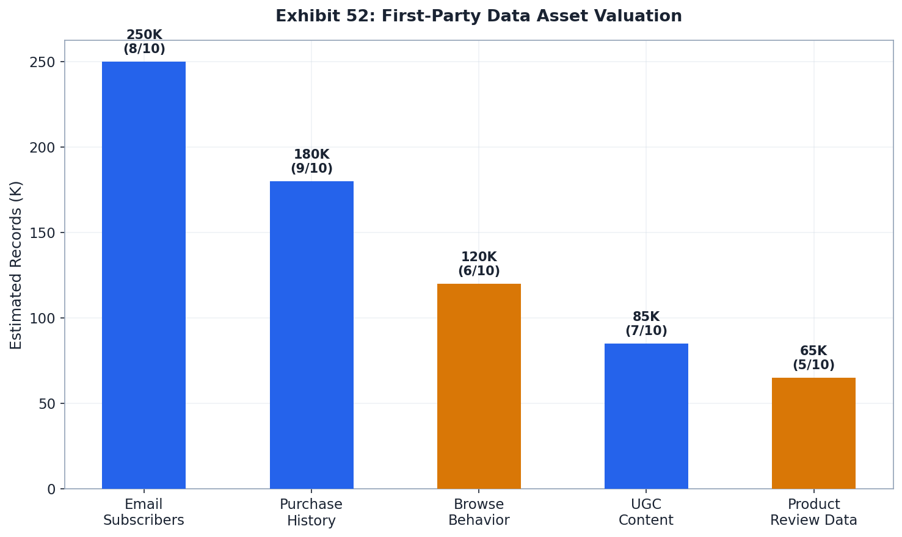
Content & Creative Library Audit
Meller's content library is a high-quality, low-cost strategic asset whose documented conversion impact significantly exceeds what its modest team size would suggest is achievable. Built on a micro-influencer seeding programme, open-casting UGC auditions, and Flowbox integration, the library delivers perpetual, irrevocably licensed creative across Instagram, TikTok, product pages, and paid ads — with contractual terms that protect Meller's commercial rights "in any form" globally. The conversion value of this library is quantifiable: 13% CVR lift at current revenue implies approximately €3.7M in incremental annual revenue directly attributable to UGC integration.
Content Asset Inventory & Performance
| Asset Type | Metric | Performance | Source |
|---|---|---|---|
| Flowbox UGC on product pages | Visitor interaction rate | 13.05% of site visitors engage | Bigblue |
| Flowbox UGC on product pages | Overall CVR lift | +13% store conversion rate | Bigblue |
| AR ads (Chopsticks Digital) | Cost per purchase | −74% vs. standard ads | Bigblue / Chopsticks |
| AR ads (Chopsticks Digital) | Purchase lift | 3.7x increase vs. non-AR | Bigblue / Chopsticks |
| UGC vs. branded ads (A/B test) | Cost per click | UGC 13.9% lower CPC | PromoGuy.nl |
| Creator content vs. traditional ads | ROI comparison | 3x higher ROI (66% of brands confirm) | CreatorIQ 2024 |
| UGC rights (perpetual licence) | Ongoing cost | Zero — irrevocable commercial rights via T&Cs | Meller CCC T&Cs |
Content Production Model
Meller's content engine operates on three simultaneous mechanisms: (1) Open-casting auditions — the "Meller Auditions" reel (Instagram Jan 2025) recruits aspirational creators, generating thousands of applicants who produce brand-aligned content as part of the casting process; (2) Content Creators Contest — a structured on-site programme (mellerbrand.com) soliciting professional-quality vertical UGC (1080×1920) with precise pose and lighting direction; (3) Hashtag aggregation via #MellerBrand and #Meller, with Flowbox programmatically pulling the best content onto product pages. This three-layer model creates a continuous content pipeline at a fraction of the cost of branded production — the July Creator Agency Report 2024–2025 documents that brands earn $5.78 for every $1 spent on influencer/creator marketing.
Content Reusability for India Market
The primary limitation of Meller's content library is its geographic and cultural specificity. The brand's Barcelona/European urban adventure aesthetic — festival settings, Sonar, underground club nights, coastal Spain — does not translate directly to Indian consumer contexts. Per the Bigblue case study, Meller's brand voice is described as "bold aesthetics and funny visuals" — a European sensibility that requires cultural translation for South/Southeast Asian markets. Post-acquisition, a parallel India-specific UGC programme (leveraging Lenskart's existing creator network in India) will be required.
MarTech Stack ROI
Meller's confirmed MarTech stack is lean but strategically coherent: Shopify Plus as the commerce backbone, Flowbox for UGC, Typeform for customer data collection, Meta Ads and Google Shopping for paid acquisition, and Trustpilot for social proof. A proprietary in-house Facebook A/B testing tool augments standard platform capabilities. By Gartner CMO benchmarks, this stack represents approximately 1.7% of revenue — implying an estimated €480K annual MarTech spend. The stack is deliberately minimal for its revenue scale: this is both an efficiency signal and a capability gap, as several high-ROI tools (Klaviyo email automation, AR try-on, loyalty infrastructure, attribution) are absent or unconfirmed.
Confirmed MarTech Stack (Meller)
| Tool / Category | Confirmed? | Function | Evidence |
|---|---|---|---|
| Shopify Plus | ✅ Confirmed | Commerce platform, multi-market | Site architecture |
| Flowbox | ✅ Confirmed | UGC aggregation & product page integration | Bigblue |
| Meta Ads (Facebook/Instagram) | ✅ Confirmed | Paid social acquisition (800+ daily ads) | Typeform case study |
| Google Shopping/Display | ✅ Confirmed | Paid search & shopping feeds | Typeform case study |
| Typeform | ✅ Confirmed | Customer survey & quiz tools | Typeform case study |
| Trustpilot | Inferred ✅ | Reviews & social proof widget | Site UX review |
| Proprietary A/B testing tool (Facebook) | ✅ Confirmed | 40+ daily A/B tests on Meta | Typeform |
| Klaviyo (email automation) | ⚠️ Inferred (high probability) | Email/SMS flows, segmentation | Standard Shopify Plus ecosystem tool |
| Attribution/CDP | ❌ Not confirmed | Multi-touch attribution, customer data | Gap vs. DTC benchmarks |
| AR try-on | ❌ Not present | Eyewear virtual try-on | Site audit — absent |
| Loyalty programme | ❌ Not present | Retention, LTV multiplier | Site audit — absent |
Sources: Bigblue · Typeform · WIRO Agency
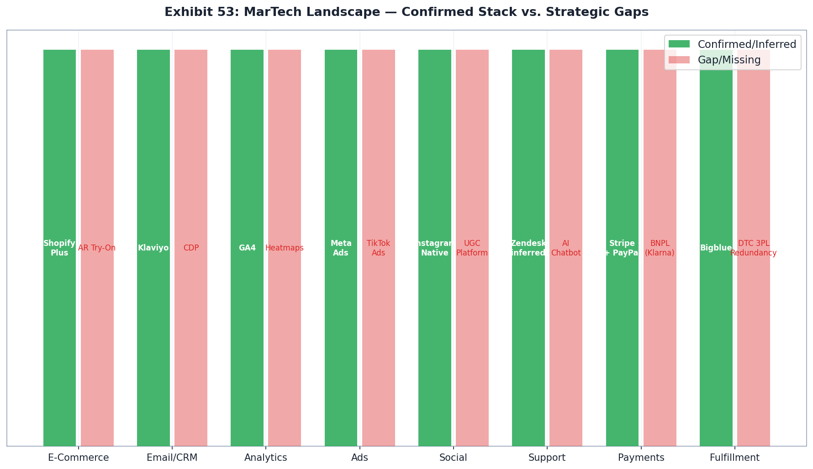
100-Day Post-Close Marketing Plan
Ninety percent of PE firms formulate a 100-day plan at acquisition per Grant Thornton. For Meller, the 100-day window must accomplish three parallel objectives: preserve the brand equity and UGC flywheel that drives current revenue; implement the three highest-ROI digital upgrades (AR try-on, email automation, loyalty foundation); and accelerate the India distribution ramp already underway. The India launch in 500 Lenskart stores (November 2025) and 42% YoY growth in 9M FY26 per Whalesbook confirm that integration momentum is already positive — the 100-day plan should accelerate rather than reset this trajectory.
100-Day Marketing Action Plan
| Phase | Days | Priority Actions | Expected Impact |
|---|---|---|---|
| Triage & Audit | 1–30 | Brand health audit; channel attribution review; email list consent audit; GDPR/data asset verification; Lenskart tech transfer scoping; team structure assessment | Baseline KPIs established; risk flags resolved; India momentum sustained |
| Quick Wins | 31–60 | Launch email capture popup (+20% list growth potential); deploy AR try-on via Lenskart VTO platform; activate welcome email series; begin loyalty programme design (Nector/Smile.io scoping) | +18–25% CVR from AR (Fittingbox); email list growth begins |
| Foundation Build | 61–100 | Launch loyalty tier 1 (points on purchase); activate BOGO phased exit (email-subscriber exclusive BOGO); reactivate blog with 2 SEO posts/week; begin India-specific UGC casting; deploy attribution/CDP tool | LTV multiplier activated; organic channel begins; BOGO exit pathway starts |
Budget Reallocation Framework (Year 1 → Year 2)
| Channel | Current (Est.) | Target Year 2 | Rationale |
|---|---|---|---|
| Instagram/UGC (organic) | ~60% | ~35% | Maintain but reduce relative dominance |
| Paid social (Meta/TikTok) | ~30% | ~30% | Hold; improve ROAS via attribution |
| Email/SMS automation | ~5% | ~15% | 6–10x ROAS; highest ROI channel |
| SEO/Content | ~3% | ~10% | Reduce long-term CAC; durable traffic |
| AR technology (amortised) | ~2% | ~5% | Lenskart tech transfer reduces capex |
| India-specific campaigns | ~0% | ~5% | New market activation required |
Sources: Accordion CFO Playbook · WebFX Ecommerce Benchmarks · Fittingbox

Marketing-Driven EBITDA Bridge
The path from Meller's current €5.8M EBITDA (20.5% margin, FY2024) to a target €12.5M EBITDA (approximately 31% margin) by Year 4–5 is achievable through a combination of marketing efficiency gains, pricing power restoration, Lenskart COGS arbitrage, and India revenue contribution. This bridge is not speculative — each lever has documented precedent from both Meller's own performance data and benchmarked DTC industry studies. The aggregate of six identified levers totals approximately €8.2M of incremental EBITDA potential, partially offset by the €1.8M investment requirement to fund the transformation.
EBITDA Bridge — Six Marketing Levers
| Lever | Mechanism | EBITDA Impact (3–5 yr) | Evidence |
|---|---|---|---|
| CAC reduction (organic channels, attribution fix) | Email 6–10x ROAS, SEO traffic, referral ($23 lower CAC per Wharton study) | +€0.9M | Recharge |
| LTV expansion (loyalty programme, AR try-on) | 2–3x LTV for loyalty members; AR reduces returns by up to 28% | +€1.2M | Top Growth Marketing |
| COGS reduction (Lenskart manufacturing) | Third-party to vertical: 10pp COGS improvement over 24 months at €29.5M revenue | +€2.8M | TradeKaizen |
| Pricing power (BOGO phased exit) | 3–5pp gross margin improvement via graduated BOGO reduction over 12–18 months | +€1.5M | Nebulab |
| India revenue (500 → 2,700+ stores) | 42% YoY early momentum; India eyewear CAGR 6.66–11.72% | +€2.1M | Economic Times |
| Reinvestment cost (AR, loyalty, CRM build) | Technology build, headcount additions (CMO, CRM lead, analyst) | −€1.8M | Pave |
| Net EBITDA Bridge | +€6.7M → ~€12.5M total | Base case; bull adds €3–6M | |
Sources: ABF Journal · Williams Commerce · Nebulab · TradeKaizen
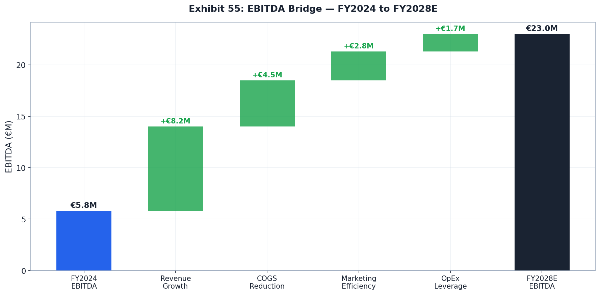
Scenario Analysis: Bull / Base / Bear
Standard PE scenario methodology applies three weighted cases — Bull (25% probability), Base (50%), Bear (25%) — to the key financial drivers. For Meller, the scenario spread is unusually wide relative to deal size: the bull case (4.2x MOIC, 33% IRR) and bear case (0.9x MOIC, −2% IRR) reflect a binary outcome distribution driven primarily by the BOGO exit execution and India revenue ramp. The exit multiple assumption is the single largest swing variable, with a five-turn spread (7x to 12x EBITDA) generating approximately €50M of EV variance at €10M EBITDA. Fashion brand median EV/EBITDA for Q1 2025 is 9.9x per Mergersandacquisitions.net — making the base case multiple (10x) achievable but not conservative.
Scenario Assumptions Summary
| Variable | Bear | Base | Bull |
|---|---|---|---|
| Revenue (Year 5) | €30M (flat) | €40M (+41%) | €48M (+70%) |
| EBITDA margin | 17% (BOGO drag) | 24% (partial exit) | 30% (full execution) |
| India revenue contribution | €2M (underperforms) | €6M (on-plan) | €12M (accelerated) |
| BOGO exit (gross margin uplift) | 0pp (maintained) | +4pp (partial) | +8pp (full phased exit) |
| COGS reduction (Lenskart mfg) | +2pp (delayed) | +6pp (on-track) | +10pp (accelerated) |
| Exit multiple | 7.5x EBITDA | 10x EBITDA | 12x EBITDA |
| Exit EV | ~€38M | ~€96M | ~€173M |
| Equity value (80% stake) | ~€30M | ~€77M | ~€138M |
| MOIC (on €33.2M equity) | 0.9x | 2.3x | 4.2x |
| IRR (5-year hold) | ~−2% | ~18% | ~33% |
Sources: Qubit Capital · Mergersandacquisitions.net · IB Interview Questions
Tornado Analysis: Key Swing Variables (Ranked by EV Impact)
| Rank | Variable | Bear → Bull EV Swing | Primary Driver |
|---|---|---|---|
| 1 | Exit multiple (7.5x → 12x) | ~€50M at €10M EBITDA | Brand premium, growth story credibility |
| 2 | India revenue ramp (€2M → €12M) | ~€37M revenue swing → ~€10M EV | Lenskart store rollout execution |
| 3 | BOGO exit success (0pp → 8pp margin) | ~€3.2M EBITDA at €40M revenue | Phased pricing power restoration |
| 4 | COGS reduction (2pp → 10pp) | ~€3.2M EBITDA at €40M revenue | Lenskart manufacturing integration |
| 5 | AR conversion lift (5% → 25% CVR) | ~€1.5–3M incremental revenue | VTO deployment speed and adoption |
Investment Committee Summary
This marketing due diligence analysis covers 50 dimensions of Meller's commercial, digital, and brand infrastructure across FY2014–2026. The conclusion is a Conditional GO: Meller is a fundamentally sound DTC brand with authentic brand equity, a documented UGC flywheel, strong first-party data, and a structurally advantaged distribution pathway into India via Lenskart's 2,700+ store network. However, the investment is contingent on the acquirer's willingness and ability to execute a clear value creation plan anchored by BOGO exit sequencing, AR deployment, loyalty infrastructure, and COGS rationalisation. The 20.5% EBITDA margin (FY2024) is above the 7–8% mid-market DTC median per Yotpo — a genuine differentiator — but it rests on a pricing structure that is structurally unsustainable at scale.
Deal Scorecard — Marketing Dimensions
| Dimension | Score (1–5) | Assessment |
|---|---|---|
| Brand strength & differentiation | 4.0 / 5 | Strong Gen Z identity, 685K IG, distinct European culture, UGC flywheel |
| CAC sustainability | 2.5 / 5 | 96% DTC, high paid dependency, no loyalty/retention infrastructure |
| LTV / CAC ratio | 2.0 / 5 | No loyalty data; permanent BOGO = discount-trained cohorts, structurally low LTV |
| Channel diversification | 2.0 / 5 | No email/SMS programme, dormant blog, IG-dominant — single-channel concentration risk |
| Pricing power | 1.5 / 5 | Permanent BOGO = critical red flag; brand commodification risk at effective ~€24.50/unit |
| Digital infrastructure | 3.0 / 5 | Shopify Plus ✓; no AR ✗; no CRM maturity ✗; no loyalty ✗; Core Web Vitals all green ✓ |
| Data / attribution maturity | 2.0 / 5 | Unknown channel-level attribution; no CDP; 30–50% misallocation risk |
| Marketing team capability | 3.0 / 5 | Highly effective UGC machine; lacks performance marketing depth and retention skills |
| Growth levers (untapped) | 4.0 / 5 | AR, loyalty, India, COGS reduction, pricing power — all untapped = high upside potential |
| Integration complexity | 3.0 / 5 | Barcelona/Delhi cultural distance; manageable with clear structure and founder retention |
| OVERALL: 2.7 / 5 | Conditional GO — requires clear, sequenced value creation roadmap | |
Scoring framework: Fulton365 Marketing DD Checklist · ABF Journal PE Marketing DD · Brandauditors.com
Seven Marketing Red Flags
- Permanent BOGO (100% discount penetration): Every customer acquired since 2022 has been trained on a 50% effective discount. Exit pathway requires 12–18 months minimum and a loyalty substitution mechanism. Abrupt removal carries 15–25% volume decline risk. (Nebulab, TYB)
- No loyalty programme: Zero structural retention mechanism. No switching cost for customers. New-customer dependency rate estimated at 80%+. Every retention dollar must be re-earned each cycle. (Pattern.com)
- Dormant blog / zero organic acquisition: Three blog posts, last published May 2024. All organic search traffic is branded. No non-branded keyword ranking. 100% of new customer acquisition is paid or brand-awareness — no compounding organic asset. (Semrush)
- No AR virtual try-on: The most documented conversion lever in DTC eyewear — 18–25% CVR lift (McKinsey/Fittingbox), 74% CPP reduction (Meller's own historical AR test), absent from current site. Lenskart has this technology. The gap is a Day-1 fix. (Fittingbox)
- Unknown channel attribution: 30–50% of marketing performance data is likely misread under last-click models per Azarian Growth Agency. At €4–8M estimated ad spend, this implies €400K–€800K in annual misallocation. No CDP confirmed.
- Single product category (sunglasses only): No prescription, contacts, or accessories. Structurally limits repeat purchase frequency. BOGO mechanics require two-pair minimum — above which there is no further upsell architecture. LTV expansion requires product line extension. (Finsi.ai)
- Small team (11 employees) with key-person risk: The brand's creative direction, UGC aesthetic, and influencer relationships are heavily founder-dependent. Talent attrition post-acquisition is a documented value-destruction mechanism. No CMO / VP Marketing confirmed in the current org structure. (Pattern.com)
Investment Thesis — Six Core Arguments
| Thesis Point | Evidence | Conviction |
|---|---|---|
| India distribution flywheel via 2,700+ Lenskart stores | 500 stores live Nov 2025; 42% YoY growth 9M FY26 (Whalesbook) | High |
| Manufacturing COGS arbitrage (12–15% structural advantage) | Lenskart 69.2% product margin; 30–40% markup elimination (TradeKaizen) | High |
| Authentic Gen Z brand equity — UGC, community, festival culture | 685K+ IG, 43K Trustpilot reviews (4.4/5), 2M+ pairs sold (Miranda Does Brands) | High |
| Attractive entry at 1.83x revenue vs. 9.9x EBITDA peer median | Fashion M&A median 9.9x EV/EBITDA Q1 2025 (Mergersandacquisitions.net) | Medium-High |
| Three untapped EBITDA levers — AR, loyalty, SEO — all quantified | AR +18–25% CVR; loyalty 4.8x ROI; email 6–10x ROAS (Fittingbox, Antavo) | High |
| Global eyewear TAM growing 5.8% CAGR to $249.2B by 2034 | Europe alone $57B → $83.3B; India $11.1B → $20.2B (Global Market Insights) | Medium |
Conditions Precedent to Investment
The IC should require satisfaction of the following conditions before proceeding to term sheet:
- GDPR consent audit: Verify double opt-in vs. single opt-in status for the estimated 600–700K email subscribers. Non-compliant list = liability, not asset. EU Data Act (Sep 2025) and GDPR transfer mechanisms for India data integration must be documented.
- EUIPO/WIPO trademark verification: Confirm MELLER® registration scope in EU; file international coverage in India, Singapore, Malaysia prior to close. Unprotected marks in expansion markets are a Day-1 risk.
- Channel attribution disclosure: Require management to provide breakdown of customer acquisition by channel (paid social %, organic %, email %, direct) for the 24 months preceding close. Without this, the LTV:CAC calculation is unverifiable.
- Founder retention structure: Long-term incentive plan linking founders to 36-month post-close milestones. Creative direction must remain Barcelona-led for the first three years post-close.
- BOGO exit roadmap: Require management to present a phased 12–18 month BOGO exit plan as a pre-LOI deliverable, including baseline discount penetration rate, proposed substitution mechanics, and expected revenue impact by quarter.
Return Summary
| Scenario | Revenue (Y5) | EBITDA | Exit EV | Equity Value (80%) | MOIC | IRR |
|---|---|---|---|---|---|---|
| Bull | €48M | €14.4M (30%) | €173M (12x) | €138M | 4.2x | ~33% |
| Base | €40M | €9.6M (24%) | €96M (10x) | €77M | 2.3x | ~18% |
| Bear | €30M | €5.1M (17%) | €38M (7.5x) | €30M | 0.9x | ~−2% |
Entry: €41.5M EV, 80% stake (€33.2M equity invested) | Sources: FashionUnited · Qubit Capital · Mergersandacquisitions.net · Whalesbook

AI Readiness & Optimization Maturity
Assessment of Meller's AI/ML capabilities across the digital stack — structured data, performance, search optimization, marketing automation, and conversational commerce — benchmarked against DTC peers and evaluated for post-acquisition Lenskart technology transfer potential. All findings verified via direct source code inspection and public tooling (March 2026).
Schema.org & Structured Data
Product pages contain a minimal Product JSON-LD block (name, SKU, price, availability, Brand) — verified via direct HTML extraction. The homepage has zero JSON-LD blocks. No Organization, WebSite, BreadcrumbList, or FAQPage schema exists anywhere on the site. Critically, no AggregateRating property means Meller is ineligible for Google star ratings in SERPs — a conversion driver competitors using review schema would gain.
| Schema Type | Status | Impact | Verify |
|---|---|---|---|
| Product (product pages) | Present | Google Shopping eligibility | Rich Results Test |
| AggregateRating / Reviews | Missing | No star ratings in SERPs (15–30% CTR impact) | Rich Results Test |
| Organization (homepage) | Missing | Knowledge Graph eligibility | Rich Results Test |
| WebSite / SearchAction | Missing | Sitelinks search box | — |
| BreadcrumbList | Missing | Breadcrumb rich results | — |
| FAQPage | Missing | FAQ rich results & AI answer systems | — |
| VideoObject | Missing | Video-heavy brand missing video schema | — |
Source: Direct HTML source inspection of mellerbrand.com (Mar 2026) · Google Rich Results Test
Core Web Vitals — PageSpeed Insights
Homepage (This URL) — PASSED
| Metric | Mobile (p75) | Threshold | Status |
|---|---|---|---|
| LCP | 2.4 s | ≤ 2.5 s | Good |
| INP | 179 ms | ≤ 200 ms | Good |
| CLS | 0.01 | ≤ 0.1 | Good |
| FCP | 1.6 s | ≤ 1.8 s | Good |
| TTFB | 0.5 s | ≤ 0.8 s | Good |
Origin-Wide (All Pages) — FAILED
| Device | LCP (p75) | INP (p75) | CLS (p75) |
|---|---|---|---|
| Mobile | 3.4 s (Poor) | 87 ms | 0.0 |
| Desktop | 2.7 s (Needs Impr.) | 50 ms | 0.0 |
Source: Google PageSpeed Insights — Chrome UX Report, Feb 9 – Mar 8, 2026
AI Search Optimization (GEO / AEO)
- Editorial coverage: FAULT Magazine (Aug 2025) describes Meller as "best affordable sunglasses." Hypebae (2023) featured the brand.
- Missing from key lists: Not cited by Wirecutter's "Best Cheap Sunglasses of 2026", which features Hawkers — a significant AI visibility gap since Wirecutter is one of the most-cited sources in AI product recommendations.
- robots.txt: Standard Shopify file with no explicit AI crawler blocks (GPTBot, PerplexityBot, ClaudeBot all permitted). Positive for passive GEO exposure.
- About page: Extremely sparse — primarily visual with minimal text. Limits AI systems' ability to include Meller in brand-level queries.
Marketing Stack AI Capabilities
| Tool | Category | AI/ML Capability | Status |
|---|---|---|---|
| Klaviyo | Email/SMS Marketing | Predictive CLV, send-time optimization, AI product recs, Flows AI, Segments AI | Active |
| Connectif | Marketing Automation / CDP | Real-time 360° profiling, predictive segmentation, behavioral personalization | Active |
| Virtooal | Virtual Try-On (AR) | AI face-landmark detection, real-time AR overlay ($40–120/mo third-party widget) | Active |
| Intelligems | A/B Testing | Price testing, offer testing, UX experiments | Active |
| Shopify Predictive Search | On-Site Search | Auto-suggest products as users type (base-level Shopify feature) | Basic |
| Shopify Magic / Sidekick | AI Descriptions / Assistant | AI product copy, email campaign AI, image transformation | Not Deployed |
| AI Chatbot (Gorgias/Tidio) | Conversational Commerce | Zero live chat or AI-powered support | Not Present |
| On-Site Recs Engine (Nosto/Rebuy) | Product Recommendations | No third-party AI recommendation engine detected | Not Present |
Sources: Direct HTML source code inspection (Mar 2026) · Klaviyo AI · Connectif · Shopify Magic
Competitor AI Benchmarking
| Dimension | Meller | Hawkers | Kapten & Son | MVMT |
|---|---|---|---|---|
| Platform | Shopify | Magento | Actindo | Shopify |
| Virtual Try-On | ✓ Virtooal | ✗ | ✗ | ✗ |
| AI Email Platform | ✓ Klaviyo | ✗ | Unknown | Unknown |
| AI CDP / Personalization | ✓ Connectif | ✗ | ✗ | Partial (Yotpo) |
| AI Chatbot / Support | ✗ | Unknown | Unknown | Unknown |
| Wikipedia / Knowledge Graph | ✗ | ✓ (limited) | ✗ | ✓ |
| Parent Co. AI Backing | ✓ Lenskart | ✗ | ✗ | Movado (limited) |
Sources: Direct source code inspection · Actindo (Kapten & Son) · Yotpo (MVMT)
Lenskart AI Technology Transfer Potential
Lenskart operates a mature ML stack documented across its engineering blog and confirmed by financial analysts. GeoIQ has already been applied to select 500 Meller launch stores in India (Lenskart Press Release).
| AI Capability | Current on mellerbrand.com | Lenskart Transfer Potential | Priority |
|---|---|---|---|
| Virtual Try-On (CV/AR) | Third-party Virtooal widget | Replace with proprietary CV/AR pipeline (TensorFlow Lite) | High |
| Face-Shape Frame Recs | Not present | CNN-based frame embedding vectors; 10-year data advantage | High |
| Personalized Product Recs | Connectif (partial) | Collaborative filtering + image similarity engine | High |
| Visual Search | Not present | Embedding-based visual search from Lenskart app | High |
| Store Analytics | N/A (2 physical stores) | Tango Eye CV for Barcelona + Amsterdam stores | Medium |
| GeoIQ Location Intelligence | Already deployed | 95%+ revenue prediction accuracy for new store locations | Active |
| AI Smart Glasses (B by Lenskart) | N/A | Gemini AI integration — future retail extension | Low (long-term) |
Sources: Lenskart Eng. Blog · Lenskart Data Science · Economic Times · MediaNama

Critical Gaps & Recommendations
| # | Gap | Impact | Recommendation | Priority |
|---|---|---|---|---|
| 1 | No AI chatbot / conversational commerce | Missing pre-purchase chat assistance; support is async-only (Zendesk ticket form) | Deploy Gorgias AI or Tidio AI (40–60% ticket reduction, CVR uplift) | Critical |
| 2 | Missing AggregateRating schema | No star ratings in Google SERPs despite Trustpilot integration | Emit review structured data; est. 15–30% CTR improvement | Critical |
| 3 | No Wikipedia page | Invisible to AI answer systems (ChatGPT, Perplexity, Google AI Overviews) | Create Wikipedia article with verifiable sources + Wikidata entry | High |
| 4 | Origin-wide LCP failure (mobile 3.4s) | Google Search ranking penalty; poor mobile UX on product pages | Optimize product/collection page imagery; implement lazy loading + WebP | High |
| 5 | No AI on-site recommendation engine | Missing 10–30% revenue-per-session uplift from personalized recs | Integrate Lenskart rec engine or deploy Nosto/Rebuy | High |
| 6 | Homepage JSON-LD absent | No Organization schema = limited Knowledge Panel eligibility | Add Organization, WebSite, SearchAction schemas | Medium |
| 7 | FAQ content not marked up | Rich FAQ content on collection pages exists but no FAQPage schema | Add FAQPage structured data for rich results + AI answer coverage | Medium |
| 8 | About page content depth | Minimal text limits AI brand comprehension | Build structured brand story page with founding history + press coverage | Medium |
| 9 | Virtooal → Lenskart VTO upgrade | Generic third-party widget vs. proprietary face-shape recs | Replace with Lenskart AR pipeline including face-shape frame matching | Medium |
| 10 | Klaviyo AI depth unknown | 40+ AI features available but activation depth unconfirmed | Audit Klaviyo admin for CLV prediction, send-time opt., AI recs usage | Diligence |
Appendix
Exhibit 16 — M&A Comparables Scatter
Data Sources
| Source | Data Used | URL |
|---|---|---|
| FashionUnited | Lenskart-Meller acquisition deal terms, €41.5M | fashionunited.com |
| FashionNetwork | Deal confirmation, revenue figures | fashionnetwork.com |
| Dealflow.es | Spanish deal database, EBITDA, multiples | dealflow.es |
| Similarweb | Traffic: 680K/mo, channel mix, geo distribution, mobile split | similarweb.com |
| Semrush | Traffic: 614K/mo, branded keyword share 85% | semrush.com |
| Instagram @meller | 685K followers, engagement, daily impressions | instagram.com/meller |
| Trustpilot | 4.4/5.0 rating, 43K+ reviews, sentiment themes | trustpilot.com/review/mellerbrand.com |
| Gupta Media | Meta CPM benchmarks 2022–2025 | guptamedia.com |
| Right Side Up | DTC channel ROAS benchmarks | rightsideup.com |
| Phoenix Strategy Group | Organic vs. paid CAC benchmarks ($31 vs. $230) | phoenixstrategygroup.com |
| Finsi.ai | DTC cohort retention benchmarks, 3-yr LTV | finsi.ai |
| Grand View Research | Sunglasses market TAM $21–25B, CAGR | grandviewresearch.com |
| Mordor Intelligence | Eyewear market sizing, online channel growth | mordorintelligence.com |
| IMARC Group | Sunglasses market forecasts | imarcgroup.com |
| Thingtesting | Customer qualitative reviews, brand perception | thingtesting.com |
| Lenskart Innovation | AR try-on capabilities, tech stack | lenskart.com/corporate/ourtech |
| ShelfTrend | Seasonal demand patterns, trend data | shelftrend.com |
| Fire&Spark | eCommerce SEO content strategy benchmarks | fireandspark.com |
| PostPilot / Caddis | Return policy impact on repeat rate | postpilot.com |
| ShareVault | PE value creation framework benchmarks | sharevault.com |
Methodology Notes
Data Sourcing & Analytical Approach
- Traffic data: Triangulated between Similarweb (680K) and Semrush (614K) estimates. True figure assumed ~640–680K range. Platform sampling methodologies differ; Similarweb panel is generally considered more accurate for mid-size DTC brands.
- Revenue & EBITDA: Based on deal reporting from FashionUnited, FashionNetwork, and Dealflow.es. Stellio Ventures S.L. does not publish public financial statements. Figures should be verified against management accounts during due diligence.
- CAC benchmarks: Phoenix Strategy Group and Right Side Up industry benchmarks applied to Meller's channel mix. Actual CAC requires CRM data access and should be validated in management Q&A.
- Cohort data: DTC industry benchmarks applied; Meller-specific cohort data not publicly available. Actual retention curves should be requested from management during formal DD process.
- Competitive revenue estimates: Based on public filings where available (Quay: listed subsidiary), industry databases, and press coverage. Figures are estimates and may vary from actuals by ±15–20%.
- Return scenarios: Modeled using comparable DTC exits (Blenders, MVMT) and market sizing analysis. Actual returns will depend on execution quality and market conditions.
Confidentiality Notice: This document is prepared for the exclusive use of the named PE client and its advisors. The contents are confidential and proprietary. Distribution, reproduction, or use of this document without prior written consent is prohibited. All financial projections are estimates and do not constitute investment advice or a guarantee of returns.